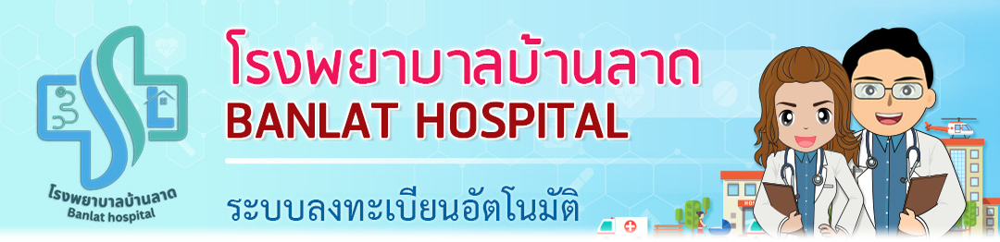
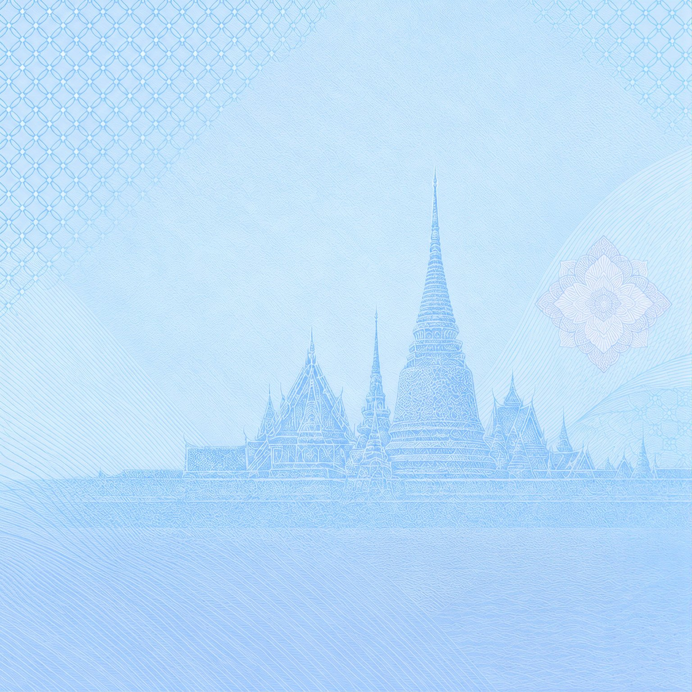

<!doctype html>
<html lang="th">
<head>
<meta charset="utf-8">
<meta name="viewport" content="width=device-width, initial-scale=1">
<title>Kiosk — เลือกบริการ</title>
<link rel="preconnect" href="https://fonts.googleapis.com">
<link rel="preconnect" href="https://fonts.gstatic.com" crossorigin>
<link href="https://fonts.googleapis.com/css2?family=Noto+Sans+Thai:wght@300;400;500;600;700&display=swap" rel="stylesheet">
<style>
:root{
  --ink:#14265A; --ink-muted:#5B6B8A; --ink-soft:#8494AE;
  --blue:#1E7BE0; --blue-deep:#0D5BC6; --blue-light:#5FB2FF; --blue-050:#EAF3FD;
  --green:#1E9C78; --green-050:#E8F7F2;
  --amber:#B45309; --amber-050:#FEF5E7;
  --red:#D92D20; --red-050:#FEF3F2;
  --line:#D7E4F2; --card:rgba(255,255,255,.93);
  /* ---- ระยะห่างตาม 8-point grid: 8 · 16 · 24 · 32 · 40 · 48 · 64 · 80 ---- */
  --gutter:80px;   /* ขอบซ้าย-ขวาของหน้า = ค่าเดียวกับหน้าแรก */
}
*{box-sizing:border-box;margin:0;padding:0}
body{background:#161A1F;font-family:"Noto Sans Thai",system-ui,sans-serif;
  display:flex;flex-direction:column;align-items:center;padding:20px 12px;gap:0}


.stage{width:1080px;height:var(--H,1920px);transform-origin:top center;flex:none}
.screen{position:relative;width:1080px;height:var(--H,1920px);overflow:hidden;border-radius:10px;
  background:#EAF2FB url("bg_home.png") center/cover no-repeat;
  box-shadow:0 30px 90px rgba(0,0,0,.5);display:flex;flex-direction:column;color:var(--ink)}
.screen::before{content:"";position:absolute;inset:0;background:rgba(255,255,255,.86);z-index:0}
.screen>*{position:relative;z-index:1}

/* ---------- Header ---------- */
.hdr{display:flex;align-items:center;gap:16px;padding:36px 56px 0;flex:none}
.hdr .logo{width:88px;height:88px;border-radius:50%;flex:none;background:#fff;border:1.5px solid var(--line);
  overflow:hidden;display:grid;place-items:center;box-shadow:0 10px 30px rgba(20,38,90,.12)}
.hdr .logo img{width:72px;height:72px;object-fit:contain}
.hdr h1{font-size:40px;font-weight:700;color:var(--ink);height:44px;line-height:44px;white-space:nowrap}
.hdr .en{font-size:28px;letter-spacing:1px;color:var(--blue);font-weight:600;
  height:44px;line-height:44px;white-space:nowrap}
.hdr .clockbox{margin-left:auto;text-align:right;flex:none;line-height:1.15}
.hdr .clockbox .d{font-size:28px;color:var(--ink-muted);font-weight:500;height:44px;line-height:44px}
.hdr .clockbox .t{font-size:46px;font-weight:700;color:var(--ink);font-variant-numeric:tabular-nums;
  letter-spacing:1px;height:44px;line-height:44px}

/* ---------- แถบผู้ป่วย ---------- */
.pt{margin:22px 56px 0;background:var(--card);border:1px solid var(--line);border-radius:22px;
  padding:20px 26px;display:flex;align-items:center;gap:18px;flex:none;backdrop-filter:blur(8px)}
.pt .av{width:58px;height:58px;border-radius:50%;background:var(--blue-050);border:1px solid var(--line);flex:none}
.pt .nm{font-size:30px;font-weight:700}
.pt .sub{font-size:22px;color:var(--ink-muted);margin-top:2px}
.pt .tag{margin-left:auto;background:var(--blue-050);color:var(--blue-deep);border-radius:99px;
  padding:10px 22px;font-size:22px;font-weight:600}

/* ---------- Step indicator ---------- */
.steps{display:flex;align-items:center;margin:24px 56px 0;flex:none}
.steps .s{display:flex;align-items:center;gap:12px;flex:none}
.steps .dot{width:44px;height:44px;border-radius:50%;display:grid;place-items:center;
  font-size:22px;font-weight:700;background:#fff;border:2px solid var(--line);color:var(--ink-soft)}
.steps .lb{font-size:21px;color:var(--ink-soft);font-weight:600;white-space:nowrap}
.steps .bar{flex:1;height:3px;background:var(--line);margin:0 14px;border-radius:2px}
.steps .s.done .dot{background:var(--green);border-color:var(--green);color:#fff}
.steps .s.done .lb{color:var(--green)}
.steps .s.now .dot{background:var(--blue);border-color:var(--blue);color:#fff;box-shadow:0 0 0 6px rgba(30,123,224,.16)}
.steps .s.now .lb{color:var(--blue-deep)}

/* ---------- เนื้อหา ---------- */
.body{flex:1;min-height:0;overflow-y:auto;padding:28px 56px 20px;display:flex;flex-direction:column;gap:22px}
.h2{font-size:52px;font-weight:700;line-height:1.18;letter-spacing:-.5px}
.lead{font-size:27px;color:var(--ink-muted);line-height:1.5}
.card{background:var(--card);border:1px solid var(--line);border-radius:26px;padding:28px 30px;backdrop-filter:blur(8px)}
.card.tight{padding:22px 26px}
.card h3{font-size:26px;font-weight:700;color:var(--blue-deep);display:flex;align-items:center;gap:12px;margin-bottom:14px}
.card h3 .n{width:34px;height:34px;border-radius:9px;background:var(--blue-050);display:grid;place-items:center;
  font-size:19px;color:var(--blue-deep);flex:none}
.card p{font-size:26px;line-height:1.52;color:var(--ink)}
.card p.muted{color:var(--ink-muted)}

.scope{display:grid;grid-template-columns:1fr 1fr;gap:12px 24px}
.scope li{list-style:none;display:flex;gap:12px;align-items:flex-start;font-size:23px;line-height:1.4}
.scope li i{width:25px;height:25px;border-radius:50%;background:var(--green-050);flex:none;margin-top:3px;
  display:grid;place-items:center}
.scope li i svg{width:14px;height:14px;stroke:var(--green)}
.scope li small{display:block;font-size:19px;color:var(--ink-soft);margin-top:1px}
.nosend{margin-top:16px;background:var(--red-050);border:1px solid #FDCFCA;border-radius:16px;padding:15px 20px;
  font-size:22px;color:#98211A;line-height:1.45}
.nosend b{color:var(--red)}

.note{border-radius:20px;padding:20px 24px;font-size:24px;line-height:1.5;display:flex;gap:16px}
.note i{width:36px;height:36px;border-radius:50%;flex:none;display:grid;place-items:center}
.note i svg{width:20px;height:20px}
.note.amber{background:var(--amber-050);border:1px solid #F6DCB4;color:#7C3B06}
.note.amber i{background:#FBE3BE} .note.amber i svg{stroke:var(--amber)}
.note.blue{background:var(--blue-050);border:1px solid #C6DFF8;color:var(--blue-deep)}
.note.blue i{background:#D5E8FB} .note.blue i svg{stroke:var(--blue-deep)}
.note.green{background:var(--green-050);border:1px solid #BFE6D8;color:#0F6B51}
.note.green i{background:#CFEEE2} .note.green i svg{stroke:var(--green)}

.opt{display:flex;align-items:center;gap:22px;background:var(--card);border:2px solid var(--line);
  border-radius:24px;padding:26px 28px;cursor:pointer;font:inherit;text-align:left;width:100%;color:var(--ink);
  transition:border-color .15s, background .15s}
.opt:hover{border-color:#A9CBEE}
.opt[aria-checked="true"]{border-color:var(--blue);background:#F4F9FF;box-shadow:0 0 0 4px rgba(30,123,224,.12)}
.opt .mk{width:38px;height:38px;border-radius:50%;border:2.5px solid var(--line);flex:none;display:grid;place-items:center}
.opt[aria-checked="true"] .mk{border-color:var(--blue);background:var(--blue)}
.opt[aria-checked="true"] .mk::after{content:"";width:15px;height:15px;border-radius:50%;background:#fff}
.opt .co{width:74px;height:74px;border-radius:18px;background:var(--blue-050);border:1px solid var(--line);flex:none}
.opt .tx b{display:block;font-size:31px;font-weight:700}
.opt .tx span{display:block;font-size:23px;color:var(--ink-muted);margin-top:4px}
.opt .eta{margin-left:auto;text-align:right;flex:none}
.opt .eta b{display:block;font-size:26px;color:var(--blue-deep);font-weight:700}
.opt .eta span{display:block;font-size:19px;color:var(--ink-soft)}

/* ---------- Modal ความยินยอม ---------- */
.ov{position:absolute;inset:0;z-index:6;background:rgba(10,25,60,.52);backdrop-filter:blur(6px);
  display:flex;align-items:center;justify-content:center;padding:150px 64px}
.sheet{width:952px;max-height:100%;background:#fff;border-radius:36px;display:flex;flex-direction:column;
  overflow:hidden;box-shadow:0 40px 100px rgba(6,20,50,.45);position:relative}
.sheet .sh{padding:34px 44px 22px;border-bottom:1px solid var(--line);flex:none;display:flex;gap:20px;align-items:flex-start}
.sheet .sh .ic{width:64px;height:64px;border-radius:18px;background:var(--blue-050);flex:none;display:grid;place-items:center}
.sheet .sh .ic svg{width:34px;height:34px;stroke:var(--blue-deep)}
.sheet .sh h2{font-size:38px;font-weight:700;line-height:1.2}
.sheet .sh p{font-size:23px;color:var(--ink-muted);margin-top:6px}
.sheet .sb{flex:1;min-height:0;overflow-y:auto;padding:26px 44px;display:flex;flex-direction:column;gap:18px}
.sheet .sb .card{background:#F8FBFF;backdrop-filter:none}
.sheet .sf{flex:none;border-top:1px solid var(--line);padding:24px 44px 28px;display:flex;flex-direction:column;gap:18px}
.sheet .sf .row{display:flex;gap:16px;align-items:center}

.agree{display:flex;gap:18px;align-items:flex-start;background:#fff;border:2px solid var(--line);
  border-radius:20px;padding:20px 24px;cursor:pointer;font:inherit;text-align:left;width:100%;color:var(--ink)}
.agree[aria-checked="true"]{border-color:var(--green);background:var(--green-050)}
.agree .bx{width:40px;height:40px;border-radius:11px;border:2.5px solid var(--line);flex:none;
  display:grid;place-items:center;background:#fff}
.agree[aria-checked="true"] .bx{border-color:var(--green);background:var(--green)}
.agree .bx svg{width:23px;height:23px;stroke:#fff;opacity:0}
.agree[aria-checked="true"] .bx svg{opacity:1}
.agree .tx{font-size:25px;line-height:1.45}
.agree.locked{opacity:.45;pointer-events:none}

.scrollcue{position:absolute;left:50%;transform:translateX(-50%);bottom:272px;z-index:7;
  background:var(--blue-deep);color:#fff;font-size:21px;font-weight:600;border-radius:99px;
  padding:12px 24px;display:flex;align-items:center;gap:9px;box-shadow:0 10px 26px rgba(13,91,198,.4)}
.scrollcue svg{width:19px;height:19px;stroke:#fff}
.scrollcue.hide{display:none}

/* ---------- Footer ---------- */
.ftr{flex:none;background:rgba(255,255,255,.94);border-top:1px solid var(--line);
  padding:24px 56px;display:flex;align-items:center;gap:18px;backdrop-filter:blur(10px)}
.btn{font:inherit;border:0;border-radius:99px;cursor:pointer;display:flex;align-items:center;gap:14px;
  font-weight:700;transition:transform .12s;white-space:nowrap}
.btn:active{transform:scale(.98)}
.btn svg{width:26px;height:26px}
.btn.primary{background:linear-gradient(135deg,var(--blue-light),var(--blue) 45%,var(--blue-deep));
  color:#fff;font-size:33px;padding:25px 44px;box-shadow:0 10px 26px rgba(30,123,224,.32);margin-left:auto}
.btn.primary svg{stroke:#fff}
.btn.primary[disabled]{background:#C9D6E6;color:#fff;box-shadow:none;cursor:not-allowed}
.btn.ghost{background:#fff;border:2px solid var(--line);color:var(--ink-muted);font-size:26px;padding:21px 30px}
.btn.ghost svg{stroke:var(--ink-muted)}
.btn.danger{background:var(--red-050);border:2px solid #FDA29B;color:var(--red);font-size:26px;padding:21px 30px}
.btn.danger svg{stroke:var(--red)}
.btn.green{background:linear-gradient(135deg,#34C39B,var(--green));color:#fff;font-size:32px;padding:25px 40px;
  box-shadow:0 10px 26px rgba(30,156,120,.3);margin-left:auto}
.btn.green svg{stroke:#fff}
.btn.wide{flex:1;justify-content:center;margin-left:0}

/* ---------- องค์ประกอบเฉพาะหน้า ---------- */
.center{flex:1;display:flex;flex-direction:column;align-items:center;justify-content:center;
  text-align:center;gap:26px;padding:0 70px}
.ring{width:190px;height:190px;border-radius:50%;border:10px solid var(--blue-050);
  border-top-color:var(--blue);animation:spin 1.15s linear infinite}
@keyframes spin{to{transform:rotate(360deg)}}
.tick{width:180px;height:180px;border-radius:50%;background:var(--green-050);border:3px solid #BFE6D8;
  display:grid;place-items:center}
.tick svg{width:92px;height:92px;stroke:var(--green)}
.clock{width:180px;height:180px;border-radius:50%;background:var(--amber-050);border:3px solid #F6DCB4;
  display:grid;place-items:center}
.clock svg{width:88px;height:88px;stroke:var(--amber)}
.reqid{font-size:26px;color:var(--ink-muted)}
.reqid b{display:block;font-size:40px;color:var(--ink);letter-spacing:2px;margin-top:6px;font-variant-numeric:tabular-nums}
.cnt{font-size:80px;font-weight:700;color:var(--blue-deep);font-variant-numeric:tabular-nums}
.pbar{width:520px;height:12px;border-radius:99px;background:var(--line);overflow:hidden}
.pbar i{display:block;height:100%;background:linear-gradient(90deg,var(--blue-light),var(--blue));border-radius:99px}

.offer{background:#fff;border:2px solid var(--line);border-radius:26px;overflow:hidden;
  width:100%;padding:0;font:inherit;text-align:left;cursor:pointer;display:block;
  transition:border-color .15s, box-shadow .15s}
.offer .top{background:#F4F7FB}
.offer[aria-checked="true"]{border-color:var(--green);box-shadow:0 0 0 5px rgba(30,156,120,.13)}
.offer[aria-checked="true"] .top{background:var(--green-050)}
.offer .top .mk{width:34px;height:34px;border-radius:50%;border:2.5px solid var(--line);flex:none;margin-left:auto}
.offer[aria-checked="true"] .top .mk{border-color:var(--green);background:var(--green);
  box-shadow:inset 0 0 0 6px #fff}
.offer .top{background:var(--green-050);padding:22px 28px;display:flex;align-items:center;gap:16px}
.offer .top .co{width:56px;height:56px;border-radius:14px;background:#fff;border:1px solid #BFE6D8;flex:none}
.offer .top b{font-size:29px}
.offer .top span{font-size:22px;color:var(--ink-muted);display:block;margin-top:2px}
.offer .top .badge{margin-left:auto;background:var(--green);color:#fff;border-radius:99px;padding:9px 20px;font-size:21px;font-weight:700}
.offer .rows{padding:22px 28px;display:flex;flex-direction:column;gap:14px}
.offer .row{display:flex;font-size:25px;gap:18px}
.offer .row .k{color:var(--ink-muted);width:230px;flex:none}
.offer .row .v{font-weight:600;flex:1}
.offer .foot{padding:18px 28px 24px;font-size:21px;color:var(--ink-soft);border-top:1px dashed var(--line);line-height:1.4}

/* ================= หน้าเลือกแบบประกัน — Figma KIOSK-Insurance-Health-Connect node 50:101 =================
   กรอบ 1080x1920 · หัวจอ 0–248 (โปร่ง ไม่มีพื้น) · "แบบประกันที่แนะนำ" 248–797 (ขาวจากล่างจางขึ้นบน มุมล่างโค้ง 40)
   "แบบประกันอื่น" หัวข้อ y845 · กริด 2x2 ที่ y976 / 1342 */
.pp{position:absolute;inset:0;background:#EAF2FB url("bg_home.png") center/cover no-repeat;color:var(--ink)}

.pp .band{position:absolute;left:0;top:0;width:1080px;height:208px;z-index:3;
  display:flex;align-items:center;justify-content:space-between;padding:80px var(--gutter) 40px}
.pp .id{display:flex;align-items:center;gap:16px}
.pp .crest{width:88px;height:88px;border-radius:50%;flex:none;display:grid;place-items:center;overflow:hidden;
  background:#fff;border:1.5px solid var(--line);box-shadow:0 10px 30px rgba(20,38,90,.12)}
.pp .crest img{width:62px;height:62px;object-fit:contain}   /* โลโก้โรงพยาบาลบ้านลาด (ตัดจากแบนเนอร์ พื้นโปร่งใส) */
.pp .ttl{font-size:40px;font-weight:700;height:44px;line-height:44px;white-space:nowrap}
.pp .sub{font-size:28px;font-weight:600;letter-spacing:1px;color:var(--blue);height:44px;line-height:44px;white-space:nowrap}
.pp .clk{text-align:right}
.pp .clk .d{font-size:28px;font-weight:500;color:var(--ink-muted);height:44px;line-height:44px}
.pp .clk .t{font-size:46px;font-weight:700;letter-spacing:1px;font-variant-numeric:tabular-nums;height:44px;line-height:44px}

/* แบบประกันที่แนะนำ */
/* หัวจอ fix ไว้ 0–208 (ใต้โลโก้ 40 + ส่วนแนะนำเว้นบน 40 = ห่างเนื้อหา 80 เท่าขอบข้าง) · เนื้อหาใต้หัวจอเลื่อนขึ้น-ลงได้ ขอบบนจาง 32px เนื้อหาจึงไม่ถูกตัดเป็นเส้นแข็งใต้หัวจอ */
.pp .scroll{position:absolute;left:0;right:0;top:550px;bottom:0;overflow-y:auto;overflow-x:hidden;
  scrollbar-width:none;overscroll-behavior:contain;
  -webkit-mask-image:linear-gradient(180deg,transparent 0,#000 16px);mask-image:linear-gradient(180deg,transparent 0,#000 16px)}
.pp .scroll::-webkit-scrollbar{display:none}
/* เมื่อเริ่มเลื่อน: ขอบบนจางยาวขึ้น 96px เนื้อหาค่อยๆ หายใต้ข้อมูลผู้ป่วย (ตอนยังไม่เลื่อนใช้ 16 ให้หัวข้อชัดเต็ม) */
.pp .scroll.scrolled{-webkit-mask-image:linear-gradient(180deg,transparent 0,rgba(0,0,0,.35) 40px,#000 96px);
                             mask-image:linear-gradient(180deg,transparent 0,rgba(0,0,0,.35) 40px,#000 96px)}
/* ผู้ยืนยันตัวตน — Figma node 67:947: แถบขาวเต็มกว้าง padding 48/80 · 2 แถวห่าง 24
   แถว 1: ตรา 88 + ชื่อ/HN (44+44) · แถว 2: 3 คอลัมน์เท่ากันห่าง 24 ป้าย 40 + ค่า 40 (ห่าง 8)
   คงที่ใต้หัวจอ (y208–504) · เลขบัตรปิดไว้เหลือ 3 หลักท้าย เพราะจอตู้อยู่ในที่สาธารณะ */
.pp .who{position:absolute;left:0;right:0;top:262px;z-index:3;
  display:flex;flex-direction:column;gap:24px;padding:48px var(--gutter)}
/* พื้นคงที่ผืนเดียวหลังเนื้อหา (ไม่เลื่อน — เลื่อนเฉพาะ content): y208 → ล่างสุดจอ
   ขาวทึบที่มุมโค้งบน → จางจนใสที่ y1024 → กลับเป็นขาวสนิทที่ y1309 แล้วขาวจนสุดจอ */
/* ทุกหน้าข้างใน: พื้นขาวไล่จางต่ำสุด 65% (ช่วงกลาง y640) ให้เห็นลายพื้นหลังรางๆ ไม่ชัดเกิน */
.pp .veil{position:absolute;left:0;right:0;top:262px;bottom:0;z-index:0;pointer-events:none;
  border-radius:40px 40px 0 0;background:linear-gradient(180deg,rgba(255,255,255,1.000) 0px,rgba(255,255,255,0.993) 53px,rgba(255,255,255,0.974) 107px,rgba(255,255,255,0.945) 160px,rgba(255,255,255,0.909) 213px,rgba(255,255,255,0.868) 267px,rgba(255,255,255,0.825) 320px,rgba(255,255,255,0.782) 373px,rgba(255,255,255,0.741) 427px,rgba(255,255,255,0.705) 480px,rgba(255,255,255,0.676) 533px,rgba(255,255,255,0.657) 587px,rgba(255,255,255,0.650) 640px,rgba(255,255,255,0.665) 675px,rgba(255,255,255,0.705) 710px,rgba(255,255,255,0.761) 745px,rgba(255,255,255,0.825) 780px,rgba(255,255,255,0.889) 815px,rgba(255,255,255,0.945) 850px,rgba(255,255,255,0.985) 885px,rgba(255,255,255,1.000) 920px) 0 0/100% 920px no-repeat,
             linear-gradient(#fff,#fff) 0 920px/100% calc(100% - 920px) no-repeat}
.pp .who .id{display:flex;align-items:center;gap:16px}
.pp .who .av{width:88px;height:88px;border-radius:50%;flex:none;display:grid;place-items:center;
  background:radial-gradient(circle at 50% 28%,#FFFFFF 0%,#FEFBF5 55%,#F7F1E4 100%);
  box-shadow:0 0 0 1.5px rgba(191,145,58,.42),0 0 0 8px rgba(191,145,58,.06)}
.pp .who .av svg{width:44px;height:44px;stroke:#A87C2A}
.pp .who .nm{font-size:40px;font-weight:700;height:44px;line-height:44px;white-space:nowrap}
.pp .who .hn{font-size:28px;font-weight:500;color:var(--ink-muted);height:44px;line-height:44px;white-space:nowrap}
.pp .who .kv{display:flex;gap:24px}
.pp .who .kv div{flex:1;min-width:0;display:flex;flex-direction:column;gap:8px}
.pp .who .kv span{font-size:24px;color:var(--ink-soft);height:40px;line-height:40px;white-space:nowrap}
.pp .who .kv b{font-size:28px;font-weight:700;height:40px;line-height:40px;white-space:nowrap;font-variant-numeric:tabular-nums}
.pp .rec{position:relative;width:1080px;height:517px;overflow:visible;}   /* การ์ดจบที่ 469 + ห่างส่วนถัดไป 48 */
.pp .hd{position:absolute;left:var(--gutter)}
.pp .hd h2{font-size:48px;font-weight:700;line-height:68px;white-space:nowrap}
.pp .hd p{font-size:32px;font-weight:500;color:rgba(20,38,90,.8);white-space:nowrap}
.pp .rec .hd{top:8px}   /* หัวข้อเริ่ม y504 ห่างข้อมูลผู้ป่วย 48 */
.pp .rec .art{position:absolute;left:0;top:154px;width:615px;height:410px;object-fit:cover;pointer-events:none;
  -webkit-mask-image:linear-gradient(180deg,rgba(0,0,0,1.000) 45.0%,rgba(0,0,0,0.957) 50.4%,rgba(0,0,0,0.844) 55.8%,rgba(0,0,0,0.684) 61.1%,rgba(0,0,0,0.500) 66.5%,rgba(0,0,0,0.316) 71.9%,rgba(0,0,0,0.156) 77.2%,rgba(0,0,0,0.043) 82.6%,rgba(0,0,0,0.000) 88.0%);
          mask-image:linear-gradient(180deg,rgba(0,0,0,1.000) 45.0%,rgba(0,0,0,0.957) 50.4%,rgba(0,0,0,0.844) 55.8%,rgba(0,0,0,0.684) 61.1%,rgba(0,0,0,0.500) 66.5%,rgba(0,0,0,0.316) 71.9%,rgba(0,0,0,0.156) 77.2%,rgba(0,0,0,0.043) 82.6%,rgba(0,0,0,0.000) 88.0%)}
/* แถบเลื่อนต้อง overflow เพื่อปัดได้ ซึ่งตัดเงาการ์ดเป็นเหลี่ยม → เผื่อพื้นที่ให้เงา 40 บน/ซ้าย 48 ล่าง
   แล้วขยับกล่องออกไปเท่ากัน การ์ดจึงยังอยู่ที่ (515,106) ตาม Figma · ปัดแล้วการ์ดหายเข้าหลังภาพที่ x475
   ล่างเผื่อ 72 > เงาการ์ด (20+38) และปล่อยให้ล้นลงบนพื้นขาวของส่วนถัดไป เงาจึงไม่ถูกตัดเป็นเส้นที่รอยต่อ */
.pp .rail{position:absolute;left:475px;right:0;top:34px;height:507px;display:flex;gap:40px;
  overflow-x:auto;scroll-snap-type:x mandatory;scroll-padding-left:40px;
  padding:40px var(--gutter) 72px 40px;scrollbar-width:none}
.pp .rail::-webkit-scrollbar{display:none}
.pp .rail .plan{width:348px;height:395px;flex:none;scroll-snap-align:start}

/* แบบประกันอื่น */
/* Figma: หัวข้อ y845 (ห่างส่วนแนะนำ 48) · กริดเริ่ม y976 · ท้ายรายการเว้น 80 */
.pp .more{padding:48px var(--gutter) 336px}   /* ล่างเผื่อแถบปุ่ม 288 + 48 · เลื่อนสุดแล้วการ์ดใบท้ายไม่ชิดปุ่ม */

/* แถบปุ่มยกเลิก: fix ล่างจอ ไม่เลื่อนตามเนื้อหา · พื้นขาวไล่ขึ้น 40px ให้การ์ดที่เลื่อนผ่านจางหายใต้แถบ
   ปุ่มสูง 88 กึ่งกลางจอ ขอบบนที่ y1752 แนวเดียวกับปุ่มภาษา/ตั้งค่าของหน้าแรก */
.pp .foot{position:absolute;left:0;right:0;bottom:0;height:288px;z-index:3;pointer-events:none;
  display:flex;align-items:flex-end;justify-content:center;padding:0 var(--gutter) 80px}
/* พื้นแถบปุ่มแบบกระจกฝ้า สูง 288: ไล่จางนุ่ม 96 แรก (เนื้อหาค่อยๆ จางหายเข้าหาปุ่ม) → ทึบ 24 เหนือปุ่ม → ปุ่ม 88 → ห่างขอบจอ 80
   เบลอ + ขาว 90–95% (mask ให้ขอบบนกลืน) · เนื้อหาทุกหน้าเว้นล่าง ≥ 288
   อยู่ใน ::before เพื่อไม่ให้ mask ไปจางปุ่ม · Kotlin (Android 7 เบลอสดไม่ได้) ใช้ขาวโปร่งไล่เฉดชุดเดียวกันแต่ไม่เบลอ */
.pp .foot::before{content:"";position:absolute;inset:0;z-index:-1;pointer-events:none;
  background:linear-gradient(180deg,rgba(255,255,255,0) 0,rgba(255,255,255,.3) 32px,rgba(255,255,255,.66) 60px,rgba(255,255,255,.88) 84px,rgba(255,255,255,.93) 96px,rgba(255,255,255,.95) 100%);
  -webkit-backdrop-filter:blur(14px);backdrop-filter:blur(14px);
  -webkit-mask-image:linear-gradient(180deg,transparent 0,#000 96px);mask-image:linear-gradient(180deg,transparent 0,#000 96px)}
.pp .cancel{pointer-events:auto;height:88px;border-radius:99px;display:flex;align-items:center;gap:16px;
  padding:0 56px;border:0;cursor:pointer;font:inherit;font-size:28px;font-weight:600;color:var(--ink-muted);
  background:#fff;box-shadow:inset 0 1px 0 #fff,0 0 0 1.5px var(--line),0 8px 20px rgba(20,38,90,.08);
  transition:transform .2s cubic-bezier(.2,.8,.2,1),box-shadow .2s}
.pp .cancel:active{transform:scale(.97);box-shadow:0 0 0 2px var(--ink-soft),0 4px 10px rgba(20,38,90,.1)}
.pp .more .hd{position:static}
.pp .grid{margin-top:32px;display:grid;grid-template-columns:1fr 1fr;grid-auto-rows:318px;gap:48px 40px}

/* การ์ดแบบประกัน: ผิวไข่มุก + ขอบทองบาง ชุดเดียวกับปุ่มหน้าแรก */
.pp .plan{border:0;font:inherit;text-align:left;cursor:pointer;color:var(--ink);border-radius:24px;
  padding:32px;display:flex;flex-direction:column;gap:8px;
  background:linear-gradient(176deg,#FFFFFF 0%,#FDFCFA 52%,#F8F5EF 100%);
  box-shadow:inset 0 1px 0 rgba(255,255,255,.98),0 0 0 2px rgba(255,255,255,.6),
             0 1px 2px rgba(20,38,90,.04),0 7px 16px rgba(20,38,90,.055),0 20px 38px rgba(20,38,90,.08);
  transition:transform .2s cubic-bezier(.2,.8,.2,1),box-shadow .2s cubic-bezier(.2,.8,.2,1)}
.pp .plan:active{transform:scale(.982);
  box-shadow:inset 0 1px 0 rgba(255,255,255,.98),0 0 0 2px rgba(191,145,58,.6),0 4px 10px rgba(20,38,90,.10)}
.pp .plan .ic{width:64px;height:64px;border-radius:50%;flex:none;display:grid;place-items:center;
  background:radial-gradient(circle at 50% 28%,#FFFFFF 0%,#FEFBF5 55%,#F7F1E4 100%);
  box-shadow:0 0 0 1.5px rgba(191,145,58,.42),0 0 0 7px rgba(191,145,58,.06),0 8px 18px rgba(120,92,30,.12)}
.pp .plan .ic.lg{position:relative;overflow:hidden;background:#fff}
.pp .plan .ic.lg img{position:absolute;inset:10px;width:44px;height:44px;object-fit:contain;background:#fff}
.pp .plan .ic.lg img.cover{inset:0;width:64px;height:64px;object-fit:cover}
.pp .plan .ic.lg b{font-size:20px;font-weight:700;line-height:1;color:#A87C2A}
.pp .plan .tag{align-self:flex-start;font-size:20px;font-weight:600;color:#8A6420;
  background:rgba(191,145,58,.12);border-radius:99px;padding:4px 16px}
.pp .plan b{font-size:32px;font-weight:700;line-height:1.25}
.pp .plan .cov{font-size:22px;color:var(--ink-muted);line-height:1.4}
.pp .plan .pr{margin-top:auto;display:flex;align-items:baseline;gap:8px;white-space:nowrap}
.pp .plan .pr span{font-size:20px;color:var(--ink-soft)}
.pp .plan .pr strong{font-size:30px;font-weight:700}
.pp .plan .top{display:flex;align-items:center;justify-content:space-between;margin-bottom:8px}
.pp .plan .top .tag{align-self:center}

/* ---------- หน้าส่งข้อมูล / ส่งสำเร็จ / ส่งนาน (ใต้แถบผู้ยืนยันตัวตน y504) ---------- */
.pp .pane{position:absolute;left:var(--gutter);right:var(--gutter);top:654px;bottom:288px;z-index:1;
  display:flex;flex-direction:column;align-items:center;justify-content:center;text-align:center;gap:24px}
.pp .pane h2{font-size:48px;font-weight:700;line-height:64px}
.pp .pane p{font-size:28px;line-height:44px;color:var(--ink-muted)}
.pp .pane p b{color:var(--ink)}
.pp .spin{width:160px;height:160px;border-radius:50%;margin-bottom:8px;
  background:conic-gradient(from 0deg,rgba(214,168,80,0) 0deg,rgba(214,168,80,0) 200deg,#D9A546 330deg,#F2CC78 360deg);
  -webkit-mask:radial-gradient(circle,transparent 66px,#000 67px);mask:radial-gradient(circle,transparent 66px,#000 67px);
  animation:spin 1.1s linear infinite}
@keyframes spin{to{transform:rotate(360deg)}}
.pp .bigic{width:160px;height:160px;border-radius:50%;display:grid;place-items:center;margin-bottom:8px;
  background:radial-gradient(circle at 50% 28%,#FFFFFF 0%,#FEFBF5 55%,#F7F1E4 100%);
  box-shadow:0 0 0 2px rgba(191,145,58,.45),0 0 0 14px rgba(191,145,58,.07),0 18px 40px rgba(120,92,30,.14)}
.pp .bigic svg{width:80px;height:80px}
.pp .bigic.ok svg{stroke:var(--green)}
.pp .bigic.wait svg{stroke:#A87C2A}
.pp .apps{width:100%;display:flex;flex-direction:column;gap:16px}
.pp .app{display:flex;align-items:center;gap:24px;padding:24px 32px;border-radius:24px;text-align:left;
  background:linear-gradient(176deg,#FFFFFF 0%,#FDFCFA 52%,#F8F5EF 100%);
  box-shadow:inset 0 1px 0 #fff,0 7px 16px rgba(20,38,90,.055),0 20px 38px rgba(20,38,90,.08)}
.pp .app .aic{width:64px;height:64px;border-radius:50%;flex:none;display:grid;place-items:center;
  background:radial-gradient(circle at 50% 28%,#FFFFFF 0%,#FEFBF5 55%,#F7F1E4 100%);box-shadow:0 0 0 1.5px rgba(191,145,58,.42)}
.pp .app .aic svg{width:32px;height:32px;stroke:#A87C2A}
.pp .app .tx b{display:block;font-size:30px;font-weight:700;line-height:40px}
.pp .app .tx span{display:block;font-size:22px;color:var(--ink-muted);line-height:32px}
.pp .app .st{margin-left:auto;flex:none;display:flex;align-items:center;gap:8px;font-size:22px;font-weight:600;
  color:#8A6420;background:rgba(191,145,58,.12);border-radius:99px;padding:8px 16px}
.pp .app .st.done{color:#0F6B51;background:var(--green-050)}
.pp .app .st svg{width:20px;height:20px;stroke:var(--green)}
.pp .rid{font-size:24px;color:var(--ink-soft)}
.pp .rid b{color:var(--ink);font-variant-numeric:tabular-nums;letter-spacing:.5px}
.pp .finish{pointer-events:auto;height:88px;min-width:360px;padding:0 56px;border-radius:99px;border:0;cursor:pointer;font:inherit;
  font-size:30px;font-weight:700;color:#fff;background:linear-gradient(180deg,#223A7A 0%,var(--ink) 100%);
  box-shadow:0 10px 24px rgba(20,38,90,.22);transition:transform .2s cubic-bezier(.2,.8,.2,1)}
.pp .finish:active{transform:scale(.97)}
.pp .finish[disabled]{background:linear-gradient(180deg,#DCE4EE,#CBD6E4);color:#F2F6FA;box-shadow:none;cursor:not-allowed;transform:none}   /* ระหว่างพิมพ์บัตรคิว */
@media (prefers-reduced-motion:reduce){.pp .spin{animation-duration:3s}}


/* ---------- หน้าสรุปหลังส่งข้อมูล: หัวข้อ + เนื้อหาชิดซ้าย ---------- */
.pp .pg{position:absolute;left:0;right:0;top:558px;bottom:288px;z-index:1;padding:0 var(--gutter);
  display:flex;flex-direction:column;gap:32px}   /* หัวข้อ → เนื้อหา 32 เท่าหน้าเลือกแบบประกัน */
.pp .pgb{display:flex;flex-direction:column;gap:24px}
.pp .psum{display:flex;align-items:center;gap:24px;padding:32px;border-radius:24px;
  background:linear-gradient(176deg,#FFFFFF 0%,#FDFCFA 52%,#F8F5EF 100%);
  box-shadow:inset 0 1px 0 #fff,0 7px 16px rgba(20,38,90,.055),0 20px 38px rgba(20,38,90,.08)}
.pp .psum .lg{position:relative;width:80px;height:80px;border-radius:50%;flex:none;overflow:hidden;display:grid;place-items:center;
  background:#fff;box-shadow:0 0 0 1.5px rgba(191,145,58,.42),0 0 0 8px rgba(191,145,58,.06)}
.pp .psum .lg img{position:absolute;inset:12px;width:56px;height:56px;object-fit:contain;background:#fff}
.pp .psum .lg img.cover{inset:0;width:80px;height:80px;object-fit:cover}
.pp .psum .lg b{font-size:22px;color:#A87C2A}
.pp .psum .tx b{display:block;font-size:34px;font-weight:700;line-height:44px}
.pp .psum .tx span{display:block;font-size:22px;color:var(--ink-muted);line-height:32px}
.pp .psum .st{margin-left:auto;flex:none;display:flex;align-items:center;gap:8px;font-size:22px;font-weight:600;
  border-radius:99px;padding:10px 18px}
.pp .psum .st svg{width:22px;height:22px}
.pp .psum .st.done{color:#0F6B51;background:var(--green-050)} .pp .psum .st.done svg{stroke:var(--green)}
.pp .psum .st.wait{color:#8A6420;background:rgba(191,145,58,.12)} .pp .psum .st.wait svg{stroke:#A87C2A}
.pp .psum .st.busy{color:var(--ink-muted);background:rgba(20,38,90,.05)}
.pp .mini-spin{width:22px;height:22px;border-radius:50%;
  background:conic-gradient(from 0deg,rgba(214,168,80,0) 0deg,rgba(214,168,80,0) 180deg,#D9A546 330deg,#F2CC78 360deg);
  -webkit-mask:radial-gradient(circle,transparent 7px,#000 8px);mask:radial-gradient(circle,transparent 7px,#000 8px);
  animation:spin 1s linear infinite}
.pp .lead2{font-size:26px;line-height:40px;color:var(--ink-muted)}

.pp .phd h2{font-size:48px;font-weight:700;line-height:68px}
.pp .phd p{font-size:32px;font-weight:500;color:rgba(20,38,90,.8);line-height:48px}
/* modal กำลังส่งข้อมูล */
/* ขยายเลยขอบจอ 80 ทุกด้าน: backdrop-filter ของ Chrome สะท้อนภาพที่ขอบ จึงให้ขอบสะท้อนอยู่นอกกรอบ (กรอบตัดทิ้ง) */
.pp .sendov{position:absolute;inset:-80px;z-index:10;display:flex;align-items:center;justify-content:center;padding:80px calc(var(--gutter) + 80px);
  background:rgba(10,25,60,.42);-webkit-backdrop-filter:blur(8px);backdrop-filter:blur(8px);animation:ovIn .25s ease-out}
.pp .sendbox{width:100%;display:flex;flex-direction:column;align-items:center;gap:24px;text-align:center;
  padding:64px 56px 56px;border-radius:40px;background:linear-gradient(176deg,#FFFFFF 0%,#FDFCFA 55%,#F8F5EF 100%);
  box-shadow:0 0 0 1px rgba(191,145,58,.32),0 40px 100px rgba(6,20,50,.35);animation:boxIn .35s cubic-bezier(.2,.8,.2,1)}
.pp .sendbox h2{font-size:44px;font-weight:700;line-height:60px}
.pp .sendbox .psum{width:100%;text-align:left;margin-top:8px}
@keyframes ovIn{from{opacity:0}to{opacity:1}}
@keyframes boxIn{from{opacity:0;transform:translateY(24px) scale(.97)}to{opacity:1;transform:none}}

/* ---------- หน้ารายละเอียดแบบประกัน: อ่านให้ครบก่อนตัดสินใจส่งข้อมูล ----------
   เลื่อนได้ใต้ผู้ยืนยันตัวตน (y496) · หัว = การ์ดสรุปแบบ + เบี้ย · ต่อด้วย ความคุ้มครอง / เงื่อนไข / ข้อยกเว้น
   ระยะ: ส่วนห่างกัน 48 · หัวข้อ → การ์ด 24 · ในการ์ดแถวละ 24 คั่นเส้นบาง · ล่างเผื่อแถบปุ่ม 248 */
.pp .dt{padding:8px var(--gutter) 336px;display:flex;flex-direction:column;gap:48px}
.pp .card{border-radius:24px;background:linear-gradient(176deg,#FFFFFF 0%,#FDFCFA 52%,#F8F5EF 100%);
  box-shadow:inset 0 1px 0 #fff,0 7px 16px rgba(20,38,90,.055),0 20px 38px rgba(20,38,90,.08)}
.pp .dhero{padding:40px;display:flex;flex-direction:column;gap:32px}
.pp .dhero .top{display:flex;align-items:center;gap:32px}
.pp .dhero .lg{position:relative;width:112px;height:112px;border-radius:50%;flex:none;overflow:hidden;display:grid;place-items:center;
  background:#fff;box-shadow:0 0 0 1.5px rgba(191,145,58,.42),0 0 0 10px rgba(191,145,58,.06)}
.pp .dhero .lg img{position:absolute;inset:16px;width:80px;height:80px;object-fit:contain;background:#fff}
.pp .dhero .lg img.cover{inset:0;width:112px;height:112px;object-fit:cover}
.pp .dhero .lg b{font-size:28px;color:#A87C2A}
.pp .dhero .tag{display:inline-block;font-size:22px;font-weight:600;color:#8A6420;background:rgba(191,145,58,.12);
  border-radius:99px;padding:4px 16px;line-height:32px}
.pp .dhero h2{font-size:52px;font-weight:700;line-height:68px;margin-top:8px;white-space:nowrap}
.pp .dhero .co{font-size:26px;color:var(--ink-muted);line-height:36px}
.pp .dhero .lead{font-size:30px;line-height:44px;font-weight:500}
.pp .dhero .price{display:flex;align-items:flex-end;justify-content:space-between;gap:24px;
  padding-top:32px;border-top:1px solid rgba(191,145,58,.24)}
.pp .dhero .price .k{font-size:26px;color:var(--ink-muted);line-height:36px}
.pp .dhero .price .k small{display:block;font-size:22px;color:var(--ink-soft);line-height:32px}
.pp .dhero .price .v{white-space:nowrap;font-size:26px;color:var(--ink-muted)}
.pp .dhero .price .v strong{font-size:64px;font-weight:700;color:var(--ink);line-height:72px;
  font-variant-numeric:tabular-nums;margin-right:8px}
.pp .dsec h3{font-size:40px;font-weight:700;line-height:56px;margin-bottom:24px}
.pp .rows{padding:8px 40px}
.pp .rows .r{display:flex;align-items:baseline;justify-content:space-between;gap:32px;padding:24px 0}
.pp .rows .r + .r{border-top:1px solid rgba(20,38,90,.08)}
.pp .rows .r .k{font-size:28px;line-height:40px;color:var(--ink)}
.pp .rows .r .k small{display:block;font-size:22px;line-height:32px;color:var(--ink-soft)}
.pp .rows .r .v{font-size:28px;line-height:40px;font-weight:700;text-align:right;white-space:nowrap;font-variant-numeric:tabular-nums}
.pp .bul{padding:32px 40px;display:flex;flex-direction:column;gap:16px}
.pp .bul li{list-style:none;display:flex;gap:16px;font-size:26px;line-height:40px;color:var(--ink)}
.pp .bul li::before{content:"";width:10px;height:10px;border-radius:50%;background:#C9A45A;flex:none;margin-top:15px}
.pp .dnote{display:flex;gap:16px;padding:24px 32px;border-radius:24px;background:rgba(30,123,224,.06);
  font-size:24px;line-height:36px;color:var(--ink-muted)}
.pp .dnote svg{width:32px;height:32px;flex:none;stroke:var(--blue);margin-top:2px}
.pp .dnote b{color:var(--ink)}
/* แถบปุ่ม 2 ปุ่ม: ย้อนกลับ (รอง) + ส่งข้อมูล (หลัก) ขอบบนปุ่ม y1752 เท่าหน้าอื่น */
.pp .foot.two{gap:24px}
.pp .foot > .finish:only-child{flex:1;justify-content:center}   /* ปุ่มหลักเดี่ยว = เต็มความกว้าง (เป้ากดใหญ่) · ปุ่มรองเดี่ยวคงขนาดพอดีข้อความ */
.pp .foot.two .cancel{justify-content:center;min-width:280px}
.pp .foot.two .finish{flex:1}

/* โทนสีตามบริษัทประกัน (หน้ารายละเอียด): ใช้สีโลโก้แทนทองเฉพาะจุดเน้น · ปุ่มยังเป็นสีของแอปเสมอ ตัวอักษรเนื้อหายังเป็นสีหมึกเดิมให้อ่านง่าย
   --br = RGB สีโลโก้ · --brd = สีเข้มสำหรับตัวอักษรบนพื้นอ่อน (ผ่าน contrast 4.5:1) */
.pp.br .card{--ring:var(--br)}   /* หน้ารายละเอียด: ขอบไล่สีโลโก้บริษัท */
.pp.br .dhero{position:relative;overflow:hidden;
  background:linear-gradient(180deg,rgba(var(--br),.10) 0%,rgba(var(--br),.03) 45%,rgba(var(--br),0) 100%),#fff}
.pp.br .dhero .lg{box-shadow:0 0 0 1.5px rgba(var(--br),.45),0 0 0 10px rgba(var(--br),.08)}
.pp.br .dhero .tag{color:var(--brd);background:rgba(var(--br),.12)}
.pp.br .dhero .price{border-top-color:rgba(var(--br),.22)}
.pp.br .dhero .price .v strong{color:var(--brd)}
.pp.br .bul li::before{background:rgb(var(--br))}
.pp.br .dnote{background:rgba(var(--br),.06)}
.pp.br .dnote svg{stroke:var(--brd)}

/* เต็มจอ (ตู้จริง / มือถือ / แท็บเล็ตแนวตั้ง): ไม่มีขอบดำ มุมโค้ง และเงากรอบตัวอย่าง */
body.bleed{padding:0;overflow:hidden}
body.bleed .screen{border-radius:0;box-shadow:none}

/* ขอบการ์ดไล่สีแบบการ์ดเสียบบัตร (ไม่มีประกายวิ่ง): ขอบ 2px เข้มสุดที่มุมซ้ายบน (จุด 14,14) จางลงจนแทบหายที่มุมขวาล่าง
   ระยะไล่เป็น % ของรัศมีถึงมุมไกลสุด การ์ดเล็กใหญ่จึงไล่สีสัดส่วนเดียวกัน · --ring = RGB สีขอบ (ค่าเริ่มต้นทอง) */
.pp .plan,.pp .dhero{position:relative}
.pp .plan::after,.pp .dhero::after{content:"";position:absolute;inset:0;border-radius:inherit;padding:2px;pointer-events:none;
  /* ขอบโลหะเงา: ชั้นบน = แถบแสงขาวสะท้อน 2 เส้นใกล้มุม · ชั้นล่าง = สีขอบไล่จาง · filter = ขอบเรืองสีเดียวกันบางๆ */
  background:
    radial-gradient(circle farthest-corner at 14px 14px,rgba(255,255,255,.55) 0,rgba(255,255,255,0) 3%,
      rgba(255,255,255,0) 6%,rgba(255,250,235,.95) 10%,rgba(255,255,255,0) 17%,
      rgba(255,255,255,0) 24%,rgba(255,250,235,.55) 30%,rgba(255,255,255,0) 38%),
    radial-gradient(circle farthest-corner at 14px 14px,rgba(var(--ring,217,165,70),1) 0,rgba(var(--ring,217,165,70),1) 6.25%,
      rgba(var(--ring,217,165,70),.55) 19.6%,rgba(var(--ring,217,165,70),.2) 44.6%,rgba(var(--ring,217,165,70),.08) 71.4%,rgba(var(--ring,217,165,70),.02) 100%);
  -webkit-mask:linear-gradient(#000 0 0) content-box,linear-gradient(#000 0 0);-webkit-mask-composite:xor;
          mask:linear-gradient(#000 0 0) content-box exclude,linear-gradient(#000 0 0);
  filter:drop-shadow(0 0 2px rgba(var(--ring,217,165,70),.45))}

/* หน้าอื่นนอกจากหน้าเลือกแบบประกัน (รายละเอียด / ส่งสำเร็จ / ส่งนาน): พื้นขาวทั้งหน้าใต้หัวจอ ไม่เห็นภาพพื้นหลัง */

/* หน้ารายละเอียด: ขอบเงาสีบริษัทเฉพาะการ์ดบนสุด · การ์ดความคุ้มครอง/เงื่อนไข/ข้อยกเว้น ใช้ขอบทองบางเรียบแบบเดิม */
.pp .card:not(.dhero){box-shadow:inset 0 1px 0 #fff,0 0 0 1px rgba(191,145,58,.32),0 7px 16px rgba(20,38,90,.055),0 20px 38px rgba(20,38,90,.08)}

/* การ์ดสรุปแบบประกัน + แถวแอป: ขอบทองบางเรียบแบบปกติ (ไม่ใช้ขอบไล่สีเงา) */
.pp .psum,.pp .app{box-shadow:inset 0 1px 0 #fff,0 0 0 1px rgba(191,145,58,.32),0 7px 16px rgba(20,38,90,.055),0 20px 38px rgba(20,38,90,.08)}
/* ไอคอนแอปจริง: สี่เหลี่ยมมุมมนแบบไอคอนแอปบนมือถือ ขนาดเท่าวงไอคอนเดิม 64 */
.pp .app .alg{width:64px;height:64px;border-radius:16px;flex:none;object-fit:cover;
  box-shadow:0 0 0 1px rgba(20,38,90,.08),0 4px 10px rgba(20,38,90,.12)}

/* หน้าสรุปผล: จัดกึ่งกลาง ไม่กระจุกบนซ้าย — ผู้ใช้ยืนมองระดับสายตา (กลาง–ล่างจอ) ได้โดยไม่ต้องเงยหน้า
   ไอคอนสถานะใหญ่ 160 → หัวข้อกลาง → การ์ด → รหัสรายการ · ทั้งก้อนอยู่กลางพื้นที่ระหว่างข้อมูลผู้ป่วย (y504) กับแถบปุ่ม */
.pp .pg{justify-content:center;gap:48px;padding-bottom:40px}
.pp .pg .phd{display:flex;flex-direction:column;align-items:center;text-align:center}
.pp .pg .phd .bigic{margin-bottom:32px}
.pp .pg .rid{text-align:center;margin-top:8px}

/* ================= หน้าเลือกบริการ (ระบบลงทะเบียน) =================
   ต่อจาก flow ประกัน (ยินยอมหรือไม่ก็ได้) · ข้อมูลผู้ป่วยคงที่บนสุด · เนื้อหาเลื่อนได้ใต้ y496
   ลำดับ: บริการที่ใช้บ่อยที่สุด (ตรวจโรคทั่วไป) เป็นการ์ดเต็มกว้าง → คลินิกเฉพาะทาง 2 คอลัมน์ → มาตามนัด
   ระยะ: หัวข้อ → การ์ด 24 · ส่วนห่างกัน 48 · การ์ดห่างกัน 24 · ขอบข้าง 80 */
.sv{padding:8px var(--gutter) 336px;   /* เลื่อนสุดแล้วเว้นจากปุ่มล่าง 48 */display:flex;flex-direction:column;gap:48px}
.sv .hd{position:static}
.sv .sec h3{font-size:32px;font-weight:700;line-height:44px;color:var(--ink-muted);margin-bottom:24px;letter-spacing:.5px}
.svc{border:0;font:inherit;text-align:left;cursor:pointer;color:var(--ink);border-radius:24px;position:relative;
  display:flex;align-items:center;gap:24px;padding:32px;
  background:linear-gradient(176deg,#FFFFFF 0%,#FDFCFA 52%,#F8F5EF 100%);
  box-shadow:inset 0 1px 0 #fff,0 0 0 1px rgba(191,145,58,.32),0 7px 16px rgba(20,38,90,.055),0 20px 38px rgba(20,38,90,.08);
  transition:transform .2s cubic-bezier(.2,.8,.2,1),box-shadow .2s}
.svc:active{transform:scale(.982);box-shadow:0 0 0 2px rgba(191,145,58,.6),0 4px 10px rgba(20,38,90,.10)}
.svc .si{width:96px;height:96px;border-radius:50%;flex:none;display:grid;place-items:center;
  background:radial-gradient(circle at 50% 28%,#FFFFFF 0%,#FEFBF5 55%,#F7F1E4 100%);
  box-shadow:0 0 0 1.5px rgba(191,145,58,.42),0 0 0 8px rgba(191,145,58,.06)}
.svc .si svg{width:48px;height:48px;stroke:#A87C2A}
.svc b{display:block;font-size:34px;font-weight:700;line-height:44px}
.svc small{display:block;font-size:22px;color:var(--ink-muted);line-height:32px;margin-top:4px}
/* บริการหลัก: เต็มกว้าง สูงกว่า ไอคอนใหญ่ */
.svc.main{padding:40px;gap:32px}
.svc.main .si{width:120px;height:120px}
.svc.main .si svg{width:60px;height:60px}
.svc.main b{font-size:44px;line-height:56px}
.svc.main small{font-size:26px;line-height:36px}
.svgrid{display:grid;grid-template-columns:1fr 1fr;gap:24px}
.svgrid .svc{flex-direction:column;align-items:flex-start;gap:20px;min-height:228px}
/* มาตามนัด: แถวรายการ ไอคอนเล็ก */
.svlist{display:flex;flex-direction:column;gap:16px}
.svlist .svc{padding:24px 32px}
.svlist .svc .si{width:72px;height:72px}
.svlist .svc .si svg{width:36px;height:36px}
.svlist .svc b{font-size:30px;line-height:40px}
.svlist .svc .tg{margin-left:auto;flex:none;font-size:22px;font-weight:600;color:var(--blue-deep);background:var(--blue-050);
  border-radius:99px;padding:8px 18px}

/* modal ลักษณะการมาของผู้ป่วย (เดิม "ประเภทสภาพผู้ป่วย") */
.cov{position:absolute;inset:-80px;z-index:10;display:flex;align-items:center;justify-content:center;padding:80px calc(var(--gutter) + 80px);
  background:rgba(10,25,60,.42);-webkit-backdrop-filter:blur(8px);backdrop-filter:blur(8px);animation:ovIn .25s ease-out}
.cbox{width:100%;padding:56px;border-radius:40px;display:flex;flex-direction:column;gap:40px;
  background:linear-gradient(176deg,#FFFFFF 0%,#FDFCFA 55%,#F8F5EF 100%);
  box-shadow:0 0 0 1px rgba(191,145,58,.32),0 40px 100px rgba(6,20,50,.35);animation:boxIn .35s cubic-bezier(.2,.8,.2,1)}
.cbox .ch{text-align:center}
.cbox .ch small{display:block;font-size:26px;color:var(--ink-muted);line-height:36px}
.cbox .ch h2{font-size:44px;font-weight:700;line-height:60px;margin-top:4px}
.cbox .ch p{font-size:26px;color:var(--ink-muted);line-height:40px;margin-top:8px}
.cgrid{display:grid;grid-template-columns:1fr 1fr;gap:24px}
.cgrid .svc{flex-direction:column;justify-content:center;gap:16px;min-height:128px;padding:24px;text-align:center;align-items:center}
.cgrid .svc .si{width:96px;height:96px}
.cgrid .svc b{font-size:32px;line-height:44px}
.cgrid .svc.wide{grid-column:1 / -1;justify-content:center}
.cbox .cfoot{display:flex;justify-content:center}
.cbox .cancel{pointer-events:auto}
@keyframes ovIn{from{opacity:0}to{opacity:1}}
@keyframes boxIn{from{opacity:0;transform:translateY(24px) scale(.97)}to{opacity:1;transform:none}}

/* ================= บัตรคิว (หลังเลือกลักษณะการมา) — ข้อมูลชุดเดียวกับสลิปใบนำทางผู้ป่วยนอก =================
   จัดกึ่งกลางแบบหน้าสรุปผล: ไอคอนสถานะ → หัวข้อ → บัตรคิว → หมายเหตุ · ผู้ใช้ยืนมองระดับสายตาได้ไม่ต้องเงย
   บัตร: ส่วนบน = คิวเรียกคนไข้ (ตัวใหญ่สุด) + QN · รอยปรุ · ส่วนล่าง = รายละเอียด + QR */
.tk{position:absolute;left:0;right:0;top:558px;bottom:288px;z-index:1;padding:0 var(--gutter) 12px;
  display:flex;flex-direction:column;justify-content:center;gap:40px}
.tk .phd{display:flex;flex-direction:column;align-items:center;text-align:center}
.tk .phd .bigic{margin-bottom:24px;width:128px;height:128px}
.tk .phd .bigic svg{width:64px;height:64px}
.tk .phd h2{font-size:48px;font-weight:700;line-height:68px}
.tk .phd p{font-size:30px;font-weight:500;color:rgba(20,38,90,.8);line-height:44px}
.tk .phd p b{color:var(--ink)}
.ticket{position:relative;border-radius:32px;background:linear-gradient(176deg,#FFFFFF 0%,#FDFCFA 52%,#F8F5EF 100%);
  box-shadow:inset 0 1px 0 #fff,0 0 0 1px rgba(191,145,58,.32),0 7px 16px rgba(20,38,90,.055),0 20px 38px rgba(20,38,90,.08)}
.ticket .top{display:flex;align-items:stretch;padding:40px 48px 36px}
.ticket .q{flex:1;display:flex;flex-direction:column;align-items:center;justify-content:center;text-align:center}
.ticket .q span{font-size:26px;color:var(--ink-muted);line-height:36px}
.ticket .q strong{font-size:112px;font-weight:700;line-height:120px;letter-spacing:2px;font-variant-numeric:tabular-nums;color:var(--blue-deep)}
.ticket .q.qn strong{color:var(--ink)}   /* QN ขนาดเท่าคิวเรียกคนไข้ ต่างกันที่สี */
.ticket .top .vr{width:1px;background:rgba(20,38,90,.1);margin:8px 32px}
/* รอยปรุ: เส้นประ + รอยเว้าครึ่งวงกลมสองข้าง (สีพื้นขาวของหน้า) */
.ticket .cut{position:relative;height:0;border-top:2px dashed rgba(20,38,90,.14);margin:0 40px}
.ticket .cut::before,.ticket .cut::after{content:"";position:absolute;top:-21px;width:40px;height:40px;border-radius:50%;background:#fff;
  box-shadow:inset 0 0 0 1px rgba(191,145,58,.32)}
.ticket .cut::before{left:-61px;clip-path:inset(0 0 0 50%)}
.ticket .cut::after{right:-61px;clip-path:inset(0 50% 0 0)}
.ticket .bot{display:flex;gap:32px;padding:32px 48px 40px;align-items:center}
.ticket .kv{flex:1;display:grid;grid-template-columns:auto 1fr;gap:12px 24px;align-items:baseline}
.ticket .kv span{font-size:24px;color:var(--ink-soft);line-height:36px;white-space:nowrap}
.ticket .kv b{font-size:28px;font-weight:700;line-height:36px}
.ticket .kv b.warn{color:var(--amber)}
.ticket .qr{width:200px;height:200px;flex:none;padding:12px;border-radius:16px;background:#fff;box-shadow:0 0 0 1px rgba(20,38,90,.1)}
.ticket .qr svg{display:block;width:100%;height:100%}
.tk .note{display:flex;gap:16px;align-items:flex-start;padding:24px 32px;border-radius:24px;background:var(--amber-050);
  font-size:24px;line-height:36px;color:#7A4A0A}
.tk .note svg{width:32px;height:32px;flex:none;stroke:var(--amber);margin-top:2px}
.tk .note b{color:#5C3606}

/* ================= การ์ดรับบัตรคิว — แนวเดียวกับการ์ดเสียบบัตรหน้าแรก =================
   920 x 480 มุม 48 · พื้นขาวไล่ฟ้าอ่อน + ลายหลังบัตร (bg_backcard) · ขอบทองไล่จางจากมุมซ้ายบน + แสงสะท้อน
   ซ้าย: ข้อความ (สถานะ → หัวข้อ 64 → เส้นทอง → ไปห้องไหน) · ขวา: แผงเครื่องสีน้ำเงิน ช่องพิมพ์ + สลิปเลื่อนออก
   แอนิเมชันรอบละ 6 วิ: 0–40% สลิปพิมพ์ออก (ไฟเขียวกะพริบ) · 40–85% ค้างให้เห็น · 85–100% จางแล้วเริ่มใหม่ */
.pcard{position:relative;height:480px;border-radius:48px;overflow:hidden;flex:none;
  background:linear-gradient(180deg,#FFFFFF 0%,#FFFFFF 16%,#F7FAFD 48%,#F2F6FB 76%,#EEF3F9 100%);
  box-shadow:inset 0 1px 0 rgba(255,255,255,.92),0 0 0 1px rgba(20,38,90,.06),0 0 0 2px rgba(255,255,255,.55),
             0 2px 4px rgba(20,38,90,.04),0 14px 30px rgba(20,38,90,.07),0 44px 84px rgba(20,38,90,.13)}
.pcard .wm{position:absolute;inset:0;opacity:.32;filter:saturate(.3);pointer-events:none;
  -webkit-mask-image:linear-gradient(180deg,transparent 150px,#000 300px);mask-image:linear-gradient(180deg,transparent 150px,#000 300px)}
.pcard .wm img{position:absolute;left:-77px;top:40px;width:760px;height:760px}
.pcard .pring{position:absolute;inset:0;border-radius:48px;padding:2px;z-index:4;pointer-events:none;
  background:radial-gradient(circle farthest-corner at 14px 14px,rgba(255,255,255,.55) 0,rgba(255,255,255,0) 3%,rgba(255,255,255,0) 6%,
      rgba(255,250,235,.95) 10%,rgba(255,255,255,0) 17%,rgba(255,255,255,0) 24%,rgba(255,250,235,.55) 30%,rgba(255,255,255,0) 38%),
    radial-gradient(circle at 14px 14px,#E2AE4C 0,#D9A546 70px,rgba(214,168,80,.45) 220px,rgba(214,168,80,.16) 500px,rgba(214,168,80,.06) 800px,rgba(214,168,80,0) 1120px);
  -webkit-mask:linear-gradient(#000 0 0) content-box,linear-gradient(#000 0 0);-webkit-mask-composite:xor;
          mask:linear-gradient(#000 0 0) content-box exclude,linear-gradient(#000 0 0);
  filter:drop-shadow(0 0 3px rgba(255,210,120,.4))}
.pcard .copy{position:absolute;left:64px;top:56px;width:440px;z-index:2}
.pcard .ok{display:inline-flex;align-items:center;gap:8px;font-size:24px;font-weight:600;color:#0F6B51;
  background:var(--green-050);border-radius:99px;padding:6px 18px 6px 12px;line-height:32px}
.pcard .ok svg{width:24px;height:24px;stroke:var(--green)}
.pcard h2{font-size:64px;font-weight:700;line-height:80px;letter-spacing:-1px;margin-top:20px;white-space:nowrap}
.pcard .rule{width:88px;height:6px;border-radius:3px;margin:24px 0;
  background:linear-gradient(90deg,#B4780C 0%,#E0A93A 55%,#CC9017 100%);box-shadow:0 2px 8px rgba(204,144,23,.30)}
.pcard p{font-size:32px;font-weight:500;line-height:48px;color:#5B6B8A;white-space:nowrap}
.pcard p b{color:var(--ink);font-weight:700}
/* แผงเครื่อง: น้ำเงินไล่เข้ม ขอบซ้ายเฉียงเล็กน้อยให้มีมิติ */
.pcard .panel{position:absolute;right:0;top:0;bottom:0;width:380px;z-index:1;
  clip-path:polygon(40px 0,100% 0,100% 100%,0 100%);
  background:linear-gradient(160deg,#2F6BD8 0%,#1B4FB8 45%,#0E3690 100%);
  box-shadow:inset 12px 0 24px rgba(0,10,40,.25)}
.pcard .panel::before{content:"";position:absolute;inset:0;background:linear-gradient(115deg,rgba(255,255,255,.18) 0%,rgba(255,255,255,0) 35%)}
/* ช่องพิมพ์: ร่องดำมีขอบบนสว่าง + ขอบล่างเงา */
.pcard .slot{position:absolute;left:92px;top:112px;width:248px;height:26px;border-radius:13px;
  background:linear-gradient(180deg,#02081A 0%,#0A1633 70%,#1A2A55 100%);
  box-shadow:inset 0 3px 6px rgba(0,0,0,.8),0 1px 0 rgba(255,255,255,.35),0 -1px 0 rgba(0,0,0,.3)}
.pcard .led{position:absolute;left:92px;top:72px;width:14px;height:14px;border-radius:50%;background:#2BD98F;
  box-shadow:0 0 0 3px rgba(43,217,143,.25),0 0 14px rgba(43,217,143,.9);animation:led 6s linear infinite}
.pcard .lbl{position:absolute;left:118px;top:66px;font-size:20px;font-weight:600;letter-spacing:1px;color:rgba(255,255,255,.75)}
@keyframes led{0%,40%{opacity:1}5%,15%,25%,35%{opacity:.25}10%,20%,30%{opacity:1}41%,100%{opacity:.35}}
/* สลิป: เห็นเฉพาะส่วนที่อยู่ใต้ร่อง (กล่องตัดเริ่มกลางร่อง) · เลื่อนลงเหมือนกระดาษออกจากเครื่อง */
.pcard .feed{position:absolute;left:104px;top:125px;width:224px;height:360px;overflow:hidden;z-index:2}
.pcard .slip{position:absolute;left:0;top:0;width:224px;height:330px;padding:18px 18px 0;border-radius:0 0 6px 6px;
  background:linear-gradient(180deg,#FFFFFF 0%,#FBFCFE 80%,#EEF2F8 100%);
  box-shadow:0 18px 30px rgba(0,12,50,.35),0 2px 4px rgba(0,12,50,.2);
  animation:feed 6s cubic-bezier(.3,.1,.3,1) infinite}
@keyframes feed{0%{transform:translateY(-100%);opacity:1}40%{transform:translateY(0);opacity:1}
  85%{transform:translateY(0);opacity:1}95%{transform:translateY(0);opacity:0}100%{transform:translateY(-100%);opacity:0}}
.pcard .slip .ln{height:6px;border-radius:3px;background:#D5DCE8;margin-bottom:8px}
.pcard .slip .big{display:flex;align-items:center;justify-content:space-between;margin:14px 0 12px;padding:10px 12px;
  border:2px solid #14265A;border-radius:6px}
.pcard .slip .big span{font-size:14px;color:#5B6B8A;line-height:18px}
.pcard .slip .big b{font-size:40px;font-weight:700;line-height:44px;color:#14265A;letter-spacing:1px}
.pcard .slip .qr{float:right;width:64px;height:64px;margin-left:12px}
.pcard .slip .qr svg{width:100%;height:100%}
.pcard .slip .dash{clear:both;border-top:2px dashed #C9D2E0;margin:14px 0 12px}
@media (prefers-reduced-motion:reduce){.pcard .slip{animation:none}.pcard .led{animation:none}}
/* หน้าบัตรคิวมีการ์ดรับบัตรแทนหัวข้อ → ลดระยะให้พอดีจอ */
.tk{gap:32px}
.ticket .top{padding:28px 48px 24px}
.ticket .bot{padding:24px 48px 28px}
.ticket .kv{gap:6px 24px}

/* ================= การ์ดรับบัตรคิว v2 — ตัวเครื่องเดียวกับการ์ดเสียบบัตรหน้าแรก =================
   ขนาด มุม พื้น ลาย และตัวเครื่อง (มุม/องศา/ช่อง) เหมือนหน้าแรกทุกพิกัด → เล่าเรื่องต่อกัน: เสียบบัตร → บัตรคิวพิมพ์ออกมา
   บัตรคิวออกจากช่องเดิมในแนวเดียวกับบัตรประชาชน (เมทริกซ์เดียวกัน) · ข้อความบนบัตรคิวเรียงขนานปากช่องแบบใบเสร็จ
   แอนิเมชันวนรอบละ 7.5 วิ: พิมพ์ออกจนสุดใบ (ไฟเขียว) → ค้างให้อ่าน → หลุดเลื่อนออกนอกการ์ด → พิมพ์ใหม่ */
.pcard{height:704px}
.pcard .wm{-webkit-mask-image:linear-gradient(180deg,transparent 206px,#000 358px);mask-image:linear-gradient(180deg,transparent 206px,#000 358px)}
.pcard .wm img{top:100px}
.pcard .wm img.flip{left:683px;transform:scaleX(-1)}
.pcard .machine{position:absolute;inset:0;z-index:1}
.pcard .machine svg{display:block;width:100%;height:100%}
.pcard .copy{top:64px;width:420px}
.pcard h2{font-size:72px;line-height:88px;margin-top:24px}   /* 2 บรรทัด ขนาดเดียวกับ "กรุณาเสียบบัตรประชาชน" หน้าแรก */
.pcard .qbig{display:flex;gap:32px;margin-top:4px}
.pcard .qbig div span{display:block;font-size:24px;color:var(--ink-muted);line-height:36px}
.pcard .qbig div strong{display:block;font-size:88px;font-weight:700;line-height:100px;letter-spacing:1px;font-variant-numeric:tabular-nums;color:var(--blue-deep)}
.pcard .qbig div.qn strong{color:var(--ink)}
.pcard p{margin-top:24px;font-size:32px;line-height:48px}
/* บัตรคิว: ขับด้วย JS ทุกเฟรม (driveSlip) — กระดาษโค้งตามน้ำหนักตัวเอง พิมพ์จนสุดใบ → ค้าง → เลื่อนออกนอกการ์ด → พิมพ์ใหม่ */
.prline{opacity:0}

/* หน้าบัตรคิว: การ์ดใหญ่ + แถบเตือน · ไม่มีการ์ดบัตรคิวแยกแล้ว (ข้อมูลอยู่บนบัตรคิวในการ์ด) */
.tk{gap:24px}
.pcard .ok .mspin{display:none;width:20px;height:20px;border-radius:50%;
  background:conic-gradient(from 0deg,rgba(30,123,224,0) 0deg,rgba(30,123,224,0) 150deg,#1E7BE0 360deg);
  -webkit-mask:radial-gradient(circle,transparent 6px,#000 7px);mask:radial-gradient(circle,transparent 6px,#000 7px);
  animation:spin 1s linear infinite}
.pcard .ok b{font-weight:600}
/* ระหว่างพิมพ์: tag ฟ้า + วงหมุน · พิมพ์เสร็จ: tag เขียว + ติ๊ก */
.pcard .ok.busy{color:var(--blue-deep);background:var(--blue-050)}
.pcard .ok.busy .mspin{display:block}
.pcard .ok.busy svg{display:none}
/* พิมพ์เสร็จ: หัวข้อเด้งขึ้นเบาๆ */
.pcard h2.pop{animation:ttlPop .45s cubic-bezier(.2,.8,.2,1)}
@keyframes ttlPop{from{opacity:0;transform:translateY(12px) scale(.97)}to{opacity:1;transform:none}}
/* skeleton ของเลขคิว/QN: แถบเทาอมฟ้ากว้างเท่าตัวเลขจริง (ตัวเลขโปร่งใสแต่ยังกินที่) + แสงวิ่งผ่าน */
.pcard .qbig strong{position:relative}
.pcard #pRoom{position:relative;width:fit-content}
.pcard #pRoom::after{content:"";position:absolute;left:0;right:0;top:6px;bottom:6px;border-radius:10px;opacity:0;pointer-events:none;
  background:linear-gradient(100deg,#D6E0EC 0%,#D6E0EC 36%,#EEF3F9 50%,#D6E0EC 64%,#D6E0EC 100%);background-size:300% 100%;
  animation:shim 1.4s linear infinite}
.pcard #pRoom.load,.pcard #pRoom.load b{color:transparent}
.pcard #pRoom.load::after{opacity:1}
.pcard #pRoom.pop{animation:ttlPop .45s cubic-bezier(.2,.8,.2,1)}
.pcard .qbig strong::after{content:"";position:absolute;left:0;right:0;top:20px;bottom:20px;border-radius:14px;opacity:0;pointer-events:none;
  background:linear-gradient(100deg,#D6E0EC 0%,#D6E0EC 36%,#EEF3F9 50%,#D6E0EC 64%,#D6E0EC 100%);background-size:300% 100%;
  animation:shim 1.4s linear infinite}
.pcard .qbig.load div strong{color:transparent}
.pcard .qbig.load strong::after{opacity:1}
.pcard .qbig.pop strong{animation:ttlPop .45s cubic-bezier(.2,.8,.2,1)}
@keyframes shim{from{background-position:100% 0}to{background-position:0 0}}

/* ================= การ์ดบริการแบบการ์ดคอร์ส (ภาพอ้างอิงจากผู้ใช้) =================
   การ์ดขาว (มุม 32 · ขอบทองบาง) → แผงสี สูง 196 ขอบหมึก 2.5 มุม 28 เริ่มที่ y56 (ที่ว่างบนให้ภาพ/ป้ายล้น)
   ป้ายหมึกเข้มตัวขาว คร่อมขอบบนแผงที่ x24 · ภาพประกอบชิดขวา ล้นเหนือแผง 48 ตัดที่ขอบล่างแผง · รายการ bullet ใต้แผง */
.sc{position:relative;display:block;width:100%;border:0;background:#fff;font:inherit;text-align:left;cursor:pointer;color:var(--ink);
  border-radius:32px;padding:44px 24px 24px;   /* ขอบการ์ด → ของชิ้นแรกเท่ากัน 24 ทุกด้าน (บนวัดถึงขอบบนป้าย: ป้ายสูง 40 คร่อมขอบแผง → แผงเริ่ม 44) */
  box-shadow:inset 0 1px 0 #fff,0 0 0 1px rgba(191,145,58,.32),0 7px 16px rgba(20,38,90,.055),0 20px 38px rgba(20,38,90,.08);
  transition:transform .2s cubic-bezier(.2,.8,.2,1)}
.sc:active{transform:scale(.982)}
.sc .scPanel{position:relative;display:block;height:196px;border-radius:28px;border:2.5px solid var(--ink);
  background:linear-gradient(160deg,#FFFFFF 0%,var(--tint) 45%,var(--tint) 100%)}
/* ชื่อวางนอกแผง (ทับภาพได้) ตำแหน่งเดียวกับในแผง */
.sc .scTtl{position:absolute;left:48px;top:84px;font-size:32px;font-weight:700;line-height:42px;white-space:nowrap}   /* ขึ้นบรรทัดใหม่ตาม ttl เท่านั้น */
.sc .scTag{position:absolute;left:48px;top:24px;height:40px;padding:0 20px;border-radius:99px;display:flex;align-items:center;
  background:var(--ink);color:#fff;font-size:20px;font-weight:600;white-space:nowrap;box-shadow:0 4px 10px rgba(20,38,90,.18)}
/* ภาพประกอบตามภาพอ้างอิง: ขนาดอิงความสูงแผง P — ภาพสูง 1.517P · ขอบซ้ายภาพอยู่ห่างขอบขวาแผง 1.373P · บนภาพอยู่เหนือแผง 0.397P
   (โทรศัพท์โผล่เหนือแผง ~0.19P) · ตัดที่ขอบในขวา/ล่างของแผง ขอบแผงจึงทับภาพ · ด้านบนไม่ตัด หัวทับขอบบนแผง · ไม่จางขอบซ้าย */
.sc{--P:196px}
.sc .scArt{position:absolute;left:26.5px;right:26.5px;top:0;height:calc(44px + var(--P) - 2.5px);overflow:hidden;pointer-events:none;
  border-radius:0 0 25.5px 25.5px;z-index:1}
/* ภาพประกอบ: กรอบตัด .scClip = จากขอบตัดซ้าย (--cl) ถึงขอบในขวาแผง · บนถึงบนการ์ด · ล่างถึงขอบในล่างแผง (มุมโค้งตามแผง) */
.sc .scClip{position:absolute;top:0;bottom:0;right:0;left:calc(100% + 2.5px + var(--P) * var(--cl));overflow:hidden;border-radius:0 0 25.5px 0}
.sc .scArt img{position:absolute;width:auto;height:calc(var(--P) * var(--ah));
  left:calc(var(--P) * (var(--ax) - var(--cl)));top:calc(44px + var(--P) * var(--ay))}
.sc .scTtl{z-index:2}
.sc .scTag{z-index:3}
.sc .scList{list-style:none;margin:20px 8px 0;display:flex;flex-direction:column;gap:4px;min-height:108px}
.sc .scList li{display:flex;gap:12px;font-size:24px;line-height:34px;color:var(--ink-muted)}
.sc .scList li::before{content:"";width:8px;height:8px;border-radius:50%;background:var(--deep);flex:none;margin-top:13px}
/* บริการหลัก: เต็มกว้าง แผงสูงกว่า ชื่อใหญ่ ภาพใหญ่ รายการเรียงแถวเดียว */
.sc.main .scPanel{height:236px}
.sc.main .scTtl{top:108px;width:420px;font-size:52px;line-height:64px}
.sc.main{--P:236px}
.sc.main .scList{flex-direction:row;gap:40px;min-height:0}
.svgrid{row-gap:32px}

/* แบนเนอร์โรงพยาบาล (ชุดเดียวกับหน้าแรก): เต็มกว้าง สูง 262 · ไฟล์ภาพต่อท้องฟ้าแทนเส้นเทา/หญ้าท้ายภาพ (y238+)
   ส่วนท้ายจาง y196→262 แบบ 1−t^2.2 (คงเข้มช่วงแรก ข้อความ "ระบบลงทะเบียนอัตโนมัติ" ยังชัด แล้วจางเร็วช่วงท้าย) ลงบนหมอกขาว
   ใต้แบนเนอร์ต่อด้วยฟ้าไล่เฉด: ฟ้าท้ายแบนเนอร์ (178,238,244) → ฟ้าอ่อน → โทนพื้นหลัง แล้วจางหายช้าๆ (y196→1000)
   หางยาวเพื่อให้ลายหน้าต่างของ bg_home ค่อยๆ โผล่ ไม่เกิดรอยเปลี่ยนข้างการ์ด
   ภาพแบนเนอร์จางลงบนสีเดียวกับตัวเอง จึงกลืนเนียน ไม่เป็นแถบขาว · กลบเส้นโค้งเพดานของ bg_home ด้วย · อยู่ใต้การ์ด (z0) */

/* หัวจอหน้าใน: แบนเนอร์อยู่เหนือพื้นขาว (veil เริ่ม y262) */
.bannerFade{position:absolute;left:0;top:196px;width:1080px;height:804px;z-index:0;pointer-events:none;
  /* ฟ้าใต้แบนเนอร์ไล่ตามสีท้องฟ้าของแบนเนอร์ทีละช่วงแนวนอน รอยต่อกลืนเป็นแผ่นเดียว → อ่อนลงเข้าโทนพื้นหลัง → จางหาย y196→1000 */
  background:linear-gradient(180deg,rgba(178,238,244,0.000) 0px,rgba(181,238,245,0.000) 20px,rgba(186,239,246,0.000) 40px,rgba(190,240,247,0.010) 60px,rgba(191,240,247,0.046) 80px,rgba(197,240,248,0.119) 100px,rgba(204,241,248,0.226) 120px,rgba(210,241,249,0.360) 140px,rgba(214,241,249,0.507) 160px,rgba(215,241,249,0.655) 180px,rgba(217,241,249,0.786) 200px,rgba(220,241,249,0.890) 220px,rgba(224,242,249,0.959) 240px,rgba(227,242,249,0.992) 260px,rgba(228,242,249,1.000) 280px,rgba(228,242,249,1.000) 300px,rgba(229,242,249,1.000) 320px,rgba(230,242,249,1.000) 340px,rgba(231,242,249,1.000) 360px,rgba(232,243,248,1.000) 380px,rgba(233,243,248,1.000) 400px,rgba(234,243,248,1.000) 420px,rgba(234,243,248,1.000) 440px,rgba(234,243,248,1.000) 460px,rgba(234,243,248,1.000) 480px,rgba(235,243,248,1.000) 500px,rgba(235,243,248,1.000) 520px,rgba(236,244,248,1.000) 540px,rgba(236,244,248,1.000) 560px,rgba(237,244,248,1.000) 580px,rgba(237,244,248,1.000) 600px,rgba(237,244,248,1.000) 620px,rgba(237,244,248,1.000) 640px,rgba(237,244,248,1.000) 660px,rgba(237,244,248,1.000) 680px,rgba(237,244,248,1.000) 700px,rgba(238,244,248,1.000) 720px,rgba(238,244,248,1.000) 740px,rgba(238,244,248,1.000) 760px,rgba(238,244,248,1.000) 780px,rgba(238,244,248,1.000) 800px),linear-gradient(90deg,rgb(186, 246, 247) 0px,rgb(185, 245, 246) 180px,rgb(186, 244, 247) 270px,rgb(182, 240, 247) 360px,rgb(177, 237, 247) 450px,rgb(170, 234, 247) 540px,rgb(157, 229, 248) 630px,rgb(145, 224, 247) 720px,rgb(141, 221, 245) 810px,rgb(143, 221, 247) 900px,rgb(141, 219, 248) 990px,rgb(158, 227, 249) 1080px);
  -webkit-mask-image:linear-gradient(180deg,rgba(0,0,0,1.000) 0px,rgba(0,0,0,0.991) 20px,rgba(0,0,0,0.974) 40px,rgba(0,0,0,0.961) 60px,rgba(0,0,0,0.957) 80px,rgba(0,0,0,0.943) 100px,rgba(0,0,0,0.925) 120px,rgba(0,0,0,0.909) 140px,rgba(0,0,0,0.900) 160px,rgba(0,0,0,0.892) 180px,rgba(0,0,0,0.865) 200px,rgba(0,0,0,0.828) 220px,rgba(0,0,0,0.789) 240px,rgba(0,0,0,0.757) 260px,rgba(0,0,0,0.741) 280px,rgba(0,0,0,0.732) 300px,rgba(0,0,0,0.704) 320px,rgba(0,0,0,0.661) 340px,rgba(0,0,0,0.610) 360px,rgba(0,0,0,0.559) 380px,rgba(0,0,0,0.512) 400px,rgba(0,0,0,0.477) 420px,rgba(0,0,0,0.461) 440px,rgba(0,0,0,0.454) 460px,rgba(0,0,0,0.431) 480px,rgba(0,0,0,0.396) 500px,rgba(0,0,0,0.352) 520px,rgba(0,0,0,0.306) 540px,rgba(0,0,0,0.261) 560px,rgba(0,0,0,0.222) 580px,rgba(0,0,0,0.194) 600px,rgba(0,0,0,0.180) 620px,rgba(0,0,0,0.176) 640px,rgba(0,0,0,0.161) 660px,rgba(0,0,0,0.139) 680px,rgba(0,0,0,0.111) 700px,rgba(0,0,0,0.081) 720px,rgba(0,0,0,0.052) 740px,rgba(0,0,0,0.027) 760px,rgba(0,0,0,0.009) 780px,rgba(0,0,0,0.000) 800px);mask-image:linear-gradient(180deg,rgba(0,0,0,1.000) 0px,rgba(0,0,0,0.991) 20px,rgba(0,0,0,0.974) 40px,rgba(0,0,0,0.961) 60px,rgba(0,0,0,0.957) 80px,rgba(0,0,0,0.943) 100px,rgba(0,0,0,0.925) 120px,rgba(0,0,0,0.909) 140px,rgba(0,0,0,0.900) 160px,rgba(0,0,0,0.892) 180px,rgba(0,0,0,0.865) 200px,rgba(0,0,0,0.828) 220px,rgba(0,0,0,0.789) 240px,rgba(0,0,0,0.757) 260px,rgba(0,0,0,0.741) 280px,rgba(0,0,0,0.732) 300px,rgba(0,0,0,0.704) 320px,rgba(0,0,0,0.661) 340px,rgba(0,0,0,0.610) 360px,rgba(0,0,0,0.559) 380px,rgba(0,0,0,0.512) 400px,rgba(0,0,0,0.477) 420px,rgba(0,0,0,0.461) 440px,rgba(0,0,0,0.454) 460px,rgba(0,0,0,0.431) 480px,rgba(0,0,0,0.396) 500px,rgba(0,0,0,0.352) 520px,rgba(0,0,0,0.306) 540px,rgba(0,0,0,0.261) 560px,rgba(0,0,0,0.222) 580px,rgba(0,0,0,0.194) 600px,rgba(0,0,0,0.180) 620px,rgba(0,0,0,0.176) 640px,rgba(0,0,0,0.161) 660px,rgba(0,0,0,0.139) 680px,rgba(0,0,0,0.111) 700px,rgba(0,0,0,0.081) 720px,rgba(0,0,0,0.052) 740px,rgba(0,0,0,0.027) 760px,rgba(0,0,0,0.009) 780px,rgba(0,0,0,0.000) 800px)}
.pp .banner{position:absolute;left:0;top:0;width:1080px;height:262px;z-index:3;display:block;pointer-events:none}   /* ทึบถึงใต้ตัวหนังสือ แล้วจางจนโปร่งที่ขอบล่าง (อบในไฟล์) */

/* ================= ผลตรวจสอบสิทธิ (ก่อนเลือกบริการ) — เลย์เอาต์เดียวกับหน้าสรุปผลประกัน =================
   ไอคอนสถานะ 160 → หัวข้อกลาง → การ์ดไข่มุก (สิทธิหลัก/รอง · สถานพยาบาลหลัก/รอง · Authen Code) → หมายเหตุ · แถบปุ่มล่าง 2 ปุ่ม */
.rt .bigic.bad{background:radial-gradient(circle at 50% 28%,#FFFFFF 0%,#FFF8EE 55%,#FCEBD3 100%);
  box-shadow:0 0 0 2px rgba(180,83,9,.35),0 0 0 14px rgba(180,83,9,.06),0 18px 40px rgba(120,60,10,.12)}
.rt .bigic.bad svg{stroke:var(--amber)}
.rt .phd p b{color:var(--ink)}
.rcard{width:100%;border-radius:24px;padding:8px 40px;background:linear-gradient(176deg,#FFFFFF 0%,#FDFCFA 52%,#F8F5EF 100%);
  box-shadow:inset 0 1px 0 #fff,0 0 0 1px rgba(191,145,58,.32),0 7px 16px rgba(20,38,90,.055),0 20px 38px rgba(20,38,90,.08)}
.rcard .r{display:flex;align-items:baseline;justify-content:space-between;gap:32px;padding:24px 0}
.rcard .r + .r{border-top:1px solid rgba(20,38,90,.08)}
.rcard .r span{font-size:26px;color:var(--ink-soft);line-height:36px;white-space:nowrap}
.rcard .r b{font-size:30px;font-weight:700;line-height:40px;text-align:right}
.rcard .r b.dim{color:var(--ink-soft);font-weight:500}
.rcard .r.auth b{font-size:34px;letter-spacing:1px;font-variant-numeric:tabular-nums;color:var(--blue-deep)}
.rt .rnote{display:flex;gap:16px;align-items:flex-start;padding:24px 32px;border-radius:24px;background:rgba(30,123,224,.06);
  font-size:24px;line-height:36px;color:var(--ink-muted);text-align:left;width:100%}
.rt .rnote svg{width:32px;height:32px;flex:none;stroke:var(--blue);margin-top:2px}
.rt .rnote.warn{background:var(--amber-050);color:#7A4A0A}
.rt .rnote.warn svg{stroke:var(--amber)}
/* การ์ดบัตรคิว สถานะรอยืนยัน: tag ทอง + คำแนะนำ · สรุปข้อมูลใต้การ์ด (แถวสิทธิที่จะใช้เน้นน้ำเงิน) */
.pcard .ok.wait{color:#8A6420;background:#FBF3E2}
.pcard .ok.wait svg{stroke:#A87C2A}
.pcard p.hint{color:var(--ink-muted);font-size:28px;line-height:44px}
.pcard p.hint b{color:var(--ink)}
.tk .rcard .r{padding:16px 0}   /* หน้าบัตรคิวของแน่น: แถวชิดขึ้นไม่ให้ล้นใต้แถบปุ่ม */
.rcard .r.use b{font-size:32px;color:var(--blue-deep)}
.rcard .r.use b small{display:block;font-size:22px;line-height:32px;font-weight:500;color:#7A4A0A}
</style>
</head>
<body>

<div class="stage" id="stage"><div class="screen" id="screen"></div></div>

<script>
/* ============================================================
   หน้าเลือกบริการ (ระบบลงทะเบียน) — ปรับจาก UI เดิมของตู้ที่เป็นรูปทั้งหมด
   เข้าได้ 2 ทาง: หลังจบ flow ประกัน หรือ "ไม่ยินยอม" ที่ modal ความยินยอม (ประกันไม่ใช่เงื่อนไขการลงทะเบียน)
   ลำดับ: เลือกบริการ → เลือกลักษณะการมา (เดิน / รถนั่ง / เปลนอน / อุ้ม / ญาติมาแทน) → บัตรคิว (ข้อมูลชุดเดียวกับสลิป)
   TODO(integration): รายการบริการ/คลินิกและเวลาเปิด ดึงจาก HIS ของโรงพยาบาล
   ============================================================ */
const ICON = {
  user:'<path d="M12 12a4 4 0 1 0 0-8 4 4 0 0 0 0 8Z"/><path d="M4.5 20.5a7.5 7.5 0 0 1 15 0"/>',
  check:'<path d="M4 12.5 9 17.5 20 6.5"/>',
  info:'<circle cx="12" cy="12" r="9"/><path d="M12 11v5M12 7.6h.01"/>',
  warn:'<path d="M12 4 2.8 20h18.4L12 4Z"/><path d="M12 10v4.5M12 17.4h.01"/>',
  shield:'<path d="M12 3 5 6v5.5c0 4.3 2.9 8.2 7 9.5 4.1-1.3 7-5.2 7-9.5V6l-7-3Z"/><path d="m9 12 2.2 2.2L15.5 10"/>',
  clock:'<circle cx="12" cy="12" r="9"/><path d="M12 7v5.2l3.2 2"/>',
  bigcheck:'<path d="M4 12.5 9.5 18 20 6.5"/>',
  arrow:'<path d="M5 12h13M12.5 6l6 6-6 6"/>',
  back:'<path d="M19 12H6M11.5 18l-6-6 6-6"/>',
  close:'<path d="M18 6 6 18M6 6l12 12"/>',
  down:'<path d="M12 5v13M6 12.5l6 6 6-6"/>',
  phone:'<rect x="6.5" y="2.5" width="11" height="19" rx="3"/><path d="M10.5 18.5h3"/>',
  doc:'<path d="M7 3h7l4 4v14H7z"/><path d="M14 3v4h4"/><path d="M10 12h6M10 16h6"/>',
};
const svg = (k, w=1.9) => `<svg viewBox="0 0 24 24" fill="none" stroke-width="${w}" stroke-linecap="round" stroke-linejoin="round">${ICON[k]}</svg>`;

/* ผู้ยืนยันตัวตน — ข้อมูลสมมติ ตอนต่อระบบจริงรับจากการอ่านบัตร/HIS */
const PATIENT = {name:'ฐากูร ทดสอบ', cid:'1103700123123', dob:'2000-06-11', hn:'000890314', right:'บัตรทอง (UC)'};
/* อายุเป็น ปี เดือน วัน: นับเดือนเต็มก่อน แล้วนับวันที่เหลือจาก "วันครบเดือน" ล่าสุด
   วันเกิดวันที่ 29–31 ในเดือนที่สั้นกว่า ถือวันสุดท้ายของเดือนนั้นเป็นวันครบเดือน */
function ageYMD(dob, now = new Date()){
  const b = new Date(dob + 'T00:00:00');
  const today = new Date(now.getFullYear(), now.getMonth(), now.getDate());
  let months = (today.getFullYear() - b.getFullYear()) * 12 + today.getMonth() - b.getMonth();
  const anchorOf = n => {
    const y = b.getFullYear() + Math.floor((b.getMonth() + n) / 12), mo = (b.getMonth() + n) % 12;
    return new Date(y, mo, Math.min(b.getDate(), new Date(y, mo + 1, 0).getDate()));
  };
  if (anchorOf(months) > today) months -= 1;
  const days = Math.round((today - anchorOf(months)) / 864e5);
  return `${Math.floor(months / 12)} ปี ${months % 12} เดือน ${days} วัน`;
}
/* เลขบัตร 13 หลักแสดงเฉพาะ 3 หลักท้าย: X-XXXX-XXXXX-12-3 */
const maskCid = c => `X-XXXX-XXXXX-${c.slice(10,12)}-${c.slice(12)}`;


/* ไอคอนเพิ่มเติมของหน้านี้ (เส้น 24x24 ชุดเดียวกับไอคอนอื่น) */
Object.assign(ICON, {
  idcard:'<rect x="3" y="5.5" width="18" height="13" rx="2.5"/><circle cx="8.5" cy="11" r="2"/><path d="M6 15.5h5M13.5 10h4M13.5 13.5h4"/>',
  steth:'<path d="M6 3v6a5 5 0 0 0 10 0V3"/><path d="M11 14v2.5a4.5 4.5 0 0 0 9 0V14"/><circle cx="20" cy="12" r="2"/>',
  bandage:'<rect x="2.5" y="8" width="19" height="8" rx="4" transform="rotate(-45 12 12)"/><path d="M10 10.5h.01M12 12h.01M13.5 13.5h.01M10.5 13.5h.01M13.5 10.5h.01"/>',
  physio:'<circle cx="12" cy="4.5" r="2"/><path d="M12 7.5v6l-3 7M12 13.5l3 7M7 10.5l5-2 5 2"/>',
  leaf:'<path d="M5 19c0-8 5-14 15-14 0 10-6 15-14 15"/><path d="M5 19 14 10"/>',
  mind:'<path d="M9.5 20v-3H7a2 2 0 0 1-2-2v-2.5L3.5 11 5 9a7 7 0 0 1 14 1c0 2.4-1 4.2-3 5.4V20"/><path d="M12 7.5v4M10 9.5h4"/>',
  tooth:'<path d="M12 5.5c-1.6-1.4-4.8-1.9-6.3 0C4.1 7.6 5 11 6 13c.8 1.7 1 7 2.8 7 1.6 0 1.4-4.5 3.2-4.5s1.6 4.5 3.2 4.5c1.8 0 2-5.3 2.8-7 1-2 1.9-5.4.3-7.5-1.5-1.9-4.7-1.4-6.3 0Z"/>',
  heart:'<path d="M12 20s-7.5-4.6-7.5-10A4.3 4.3 0 0 1 12 7.3 4.3 4.3 0 0 1 19.5 10C19.5 15.4 12 20 12 20Z"/><path d="M4.5 12.5h4l1.5-2.5 2.5 5 1.5-2.5h5.5"/>',
  flask:'<path d="M9 3h6M10 3v6.5L4.8 18.2A1.8 1.8 0 0 0 6.3 21h11.4a1.8 1.8 0 0 0 1.5-2.8L14 9.5V3"/><path d="M7.5 15h9"/>',
  xray:'<rect x="3.5" y="3.5" width="17" height="17" rx="3"/><path d="M12 6.5v11M9 8.5h6M8.5 11h7M9 13.5h6"/>',
  walk:'<circle cx="13" cy="4.5" r="2"/><path d="m9.5 21 2-6 2.5 2v4M8 12l2-4.5 3.5.5 2 3.5 2.5 1"/><path d="m11.5 15 1.5-6.5"/>',
  wheel:'<circle cx="10" cy="4.5" r="2"/><path d="M10 7.5v5h5l2.5 5.5H19"/><path d="M7.5 11.5a5 5 0 1 0 7.5 5"/>',
  stretcher:'<path d="M3 13h18M5 13v4M19 13v4"/><circle cx="5" cy="19" r="1.5"/><circle cx="19" cy="19" r="1.5"/><circle cx="7" cy="9.5" r="2"/><path d="M10 11h8.5"/>',
  carry:'<circle cx="9" cy="4.5" r="2"/><path d="M9 7.5v6l-2 7.5M9 13.5l2.5 7.5M6 10.5l3-1 5 2.5"/><circle cx="16.5" cy="9" r="1.6"/><path d="M13.5 12.5l5-1"/>',
  family:'<circle cx="8" cy="7" r="2.5"/><circle cx="16.5" cy="8" r="2"/><path d="M3.5 20a4.5 4.5 0 0 1 9 0M13 20a3.5 3.5 0 0 1 7 0"/>',
});

/* หัวจอ + ผู้ยืนยันตัวตน + พื้นไล่สี — ใช้ร่วมทุกหน้าใน flow ประกัน */
const ppHead = (full = false) => `
    

    <div class="bannerFade" aria-hidden="true"></div>
    <div class="veil${full ? ' full' : ''}"></div>
    <div class="who">
      <div class="id">
        <span class="av">${svg('user',1.8)}</span>
        <div><div class="nm">${PATIENT.name}</div><div class="hn">HN ${PATIENT.hn}</div></div>
      </div>
      <div class="kv">
        <div><span>เลขบัตรประชาชน</span><b>${maskCid(PATIENT.cid)}</b></div>
        <div><span>อายุ</span><b>${ageYMD(PATIENT.dob)}</b></div>
        <div><span>สิทธิการรักษา</span><b>${PATIENT.right}</b></div>
      </div>
    </div>
`;


/* บริการ — ปรับชื่อ/จัดกลุ่มจาก UI เดิม · small = คำอธิบายสั้นให้ผู้สูงอายุเลือกถูก */
/* บริการ — ปรับชื่อ/จัดกลุ่มจาก UI เดิม · sub = คำอธิบายสั้นให้ผู้สูงอายุเลือกถูก
   tag = ป้ายบนขอบการ์ด = "เลือกบริการ" — TODO(integration): บริการที่ปิด/งดรับ เปลี่ยนข้อความและทำการ์ดจาง
   tint/deep = สีพื้นแผง/สีเข้มของบริการ · bl = รายการใต้แผง · ภาพประกอบใช้ภาพคุณลุงคุณป้าทุกการ์ดไปก่อน (ART) — รอภาพแยกแต่ละบริการ */
const ART = 'ins_couple.png';
/* af = [x, y, h, cl] หน่วย P (ความสูงแผง): x = ขอบซ้ายภาพจากขอบขวาแผง · y = บนภาพจากบนแผง · h = สูงภาพ · cl = ขอบตัดซ้าย (จากขอบขวาแผง)
   ภาพแต่ละบริการครอปตาม Figma (114:22 / 114:34 / 114:44 / 114:56 / 114:85 / 115:96 / 115:106) แล้วเลื่อนลงให้ส่วนบนสุดห่างขอบการ์ด 24 เท่าขอบบนป้าย */
const AF = [-1.213, -0.28, 1.34, -9];
const MAIN = {id:'opd', ttl:'ตรวจ<br>โรคทั่วไป', ic:'steth', name:'ตรวจโรคทั่วไป', sub:'เจ็บป่วยทั่วไป ไม่มีนัดหมาย', tag:'เลือกบริการ', tint:'#DCEBFB', deep:'#0D5BC6', art:'art_opd.png', bl:['เจ็บป่วยทั่วไป','ไม่มีนัดหมายล่วงหน้า'], af:[-1.281,-0.322,1.561,-1.281]};
const CLINICS = [
  {id:'wound', ttl:'ฉีดยา /<br>ทำแผล',  ic:'bandage', name:'ฉีดยา / ทำแผล',  sub:'ฉีดยาตามนัด ล้างแผล ตัดไหม',  tag:'เลือกบริการ', tint:'#FBE6E1', deep:'#C2410C', bl:['ฉีดยาตามนัด','ล้างแผล / ทำแผล','ตัดไหม'], art:'art_wound.png', af:[-1.376,-0.256,1.369,-1.375]},
  {id:'med',    ic:'heart',   name:'อายุรกรรม',       sub:'โรคเรื้อรัง เบาหวาน ความดัน', tag:'เลือกบริการ', tint:'#FBE3EC', deep:'#BE185D', bl:['โรคเรื้อรัง','เบาหวาน','ความดันโลหิตสูง'], art:'art_med.png', af:[-1.431,-0.304,1.895,-1.381]},
  {id:'dent',   ic:'tooth',   name:'ทันตกรรม',        sub:'ตรวจฟัน อุดฟัน ถอนฟัน',      tag:'เลือกบริการ', tint:'#DDF1F8', deep:'#0E7490', bl:['ตรวจฟัน','อุดฟัน / ขูดหินปูน','ถอนฟัน'], art:'art_dent.png', af:[-1.134,-0.36,1.471,-1.134]},
  {id:'physio', ttl:'กายภาพ<br>บำบัด', ic:'physio',  name:'กายภาพบำบัด',     sub:'ฟื้นฟูร่างกาย ปวดกล้ามเนื้อ', tag:'เลือกบริการ', tint:'#E1F3EA', deep:'#15803D', bl:['ฟื้นฟูร่างกาย','ปวดคอ บ่า หลัง','ปวดกล้ามเนื้อ'], art:'art_physio.png', af:[-1.807,-0.102,1.557,-1.375]},
  {id:'thai', ttl:'แพทย์<br>แผนไทย',   ic:'leaf',    name:'แพทย์แผนไทย',     sub:'นวด ประคบ สมุนไพร',          tag:'เลือกบริการ', tint:'#EDF3DC', deep:'#4D7C0F', bl:['นวดรักษา','ประคบสมุนไพร','ยาสมุนไพร'], art:'art_thai.png', af:[-2.364,-0.309,1.726,-1.375]},
  {id:'psy',    ic:'mind',    name:'จิตเวช',          sub:'ปรึกษาสุขภาพใจ',             tag:'เลือกบริการ', tint:'#EAE6FA', deep:'#6D28D9', bl:['ปรึกษาสุขภาพใจ','นอนไม่หลับ / เครียด'], art:'art_psy.png', af:[-2.82,-0.38,1.875,-1.169]},
];
const APPT = [
  {id:'lab', ttl:'LAB<br>มาก่อนนัด',  ic:'flask', name:'LAB มาก่อนนัด',   sub:'เจาะเลือด / ตรวจแล็บ ก่อนพบแพทย์', tag:'เลือกบริการ', tint:'#FDF0D9', deep:'#B45309', bl:['เจาะเลือด','ตรวจแล็บก่อนพบแพทย์']},
  {id:'xray', ttl:'X-RAY<br>มาก่อนนัด', ic:'xray',  name:'X-RAY มาก่อนนัด', sub:'เอกซเรย์ ก่อนพบแพทย์',             tag:'เลือกบริการ', tint:'#E3E8F6', deep:'#3730A3', bl:['เอกซเรย์','ก่อนพบแพทย์ตามนัด']},
];
const ARRIVE = [
  {id:'walk',  ic:'walk',      name:'เดินมาเอง'},
  {id:'wheel', ic:'wheel',     name:'รถเข็น / รถนั่ง'},
  {id:'bed',   ic:'stretcher', name:'เปลนอน'},
  {id:'carry', ic:'carry',     name:'อุ้มมา'},
  {id:'proxy', ic:'family',    name:'ญาติมาแทน', wide:true},
];
let PICK = null;
/* การ์ดบริการแบบการ์ดคอร์ส: การ์ดขาวชั้นนอก → แผงสีขอบเข้ม (ป้ายดำคร่อมขอบบนซ้าย · ชื่อตัวใหญ่ · ภาพประกอบล้นขอบบน-ขวา) → รายการใต้แผง */
const svcBtn = (s, cls='') => `<button class="sc ${cls}" data-svc="${s.id}" style="--tint:${s.tint};--deep:${s.deep}">
    <span class="scPanel"></span>
    <span class="scArt"><span class="scClip" style="--cl:${(s.af || AF)[3]}"></span></span>
    <b class="scTtl">${s.ttl || s.name}</b>
    <span class="scTag">${s.tag}</span>
    <ul class="scList">${s.bl.map(x => `<li>${x}</li>`).join('')}</ul></button>`;

const screen = () => `
  <div class="pp">
${ppHead()}
    <div class="scroll"><div class="sv">
      <div class="hd"><h2>เลือกบริการที่ต้องการ</h2><p>แตะบริการเพื่อรับบัตรคิว</p></div>
      <div class="svgrid">${[MAIN, ...CLINICS].map(s => svcBtn(s)).join('')}</div>
      <section class="sec"><h3>มาตามนัด</h3><div class="svgrid">${APPT.map(s => svcBtn(s)).join('')}</div></section>
    </div></div>
    <div class="foot"><button class="cancel" data-home>ยกเลิก, กลับหน้าแรก</button></div>
    ${PICK ? arriveModal() : ''}
  </div>`;

const arriveModal = () => { const s = [MAIN, ...CLINICS, ...APPT].find(x => x.id === PICK); return `
    <div class="cov" role="dialog" aria-modal="true" aria-labelledby="cTtl">
      <div class="cbox">
        <div class="ch"><small>${s.name}</small><h2 id="cTtl">ท่านมาในลักษณะใด</h2><p>เพื่อให้เจ้าหน้าที่เตรียมรับได้ถูกต้อง</p></div>
        <div class="cgrid">${ARRIVE.map(a => `<button class="svc ${a.wide ? 'wide' : ''}" data-arrive="${a.id}"><b>${a.name}</b></button>`).join('')}</div>
        <div class="cfoot"><button class="cancel" data-close>ยกเลิก</button></div>
      </div>
    </div>`; };


/* ---------- บัตรคิว ----------
   TODO(integration): QN / คิวเรียกคนไข้ / ห้องตรวจ / สถานะสิทธิ / แพ้ยา / QR รับจาก HIS หลังส่งบริการ + ลักษณะการมา
   ต้นแบบ: ตัวอักษรนำหน้าคิวตามบริการ · QR เป็นลายจำลอง (ไม่ใช่ QR จริง) */
const ROOM = {opd:'ห้องตรวจ', wound:'ห้องฉีดยาทำแผล', med:'ห้องตรวจอายุรกรรม', dent:'ทันตกรรม', physio:'กายภาพบำบัด',
              thai:'แผนไทย / ฝังเข็ม', psy:'จิตเวช', lab:'ห้องปฏิบัติการ (LAB)', xray:'ห้องเอกซเรย์'};
const PREFIX = {opd:'A', wound:'B', med:'C', dent:'D', physio:'E', thai:'F', psy:'G', lab:'L', xray:'X'};
let TICKET = null;
const fakeQR = seed => {   /* ลาย QR จำลอง 25x25 + จุดมุม 3 จุด */
  let r = seed * 9301 + 49297, cells = '';
  const rnd = () => (r = (r * 9301 + 49297) % 233280) / 233280;
  const finder = (x, y) => (x < 7 && y < 7) || (x > 17 && y < 7) || (x < 7 && y > 17);
  for (let y = 0; y < 25; y++) for (let x = 0; x < 25; x++) if (!finder(x, y) && rnd() > .52) cells += `M${x} ${y}h1v1h-1z`;
  const f = (x, y) => `<path d="M${x} ${y}h7v7h-7z M${x+1} ${y+1}v5h5v-5z" fill-rule="evenodd"/><path d="M${x+2} ${y+2}h3v3h-3z"/>`;
  return `<svg viewBox="0 0 25 25" shape-rendering="crispEdges" fill="#14265A"><path d="${cells}"/>${f(0,0)}${f(18,0)}${f(0,18)}</svg>`;
};

/* บัตรคิวในการ์ด: กระดาษ 300 (ขนานปากช่อง) x 940 (ยาวตามใบจริง) หน่วยบัตร ฉายด้วยเมทริกซ์เดียวกับบัตรประชาชน
   เนื้อหาวาดในกรอบตั้งตรง (u ขวาง, v = ระยะจากปลายในสุด) → วางลงกรอบ F (u', v' = ระยะออกจากปากช่อง) → แกนบัตร x = v', y = 300 − u'
   กระดาษนิ่ม: ส่วนที่ออกมาแล้วโค้งตามแรงโน้มถ่วง ความโค้ง κ คงที่ตามความยาว → จุดที่ระยะ d จากปากช่องทำมุม φ = κd
   แบ่งกระดาษเป็น 24 แถบ แต่ละแถบวางแบบแข็งตามมุมที่ต้นแถบ (ต่อกันเป็นโค้ง) + แรเงาตามมุม ให้ดูเป็นกระดาษโค้งจริง */
const SLIP_N = 24, SLIP_L = 940;   /* 24 แถบ + ซ้อนขอบ 4 หน่วย ไม่ให้เห็นรอยต่อตรงริมกระดาษ */
/* จุดบริการบนสลิป (ชุดเดียวกับใบจริง) — ติ๊กห้องที่เลือกให้อัตโนมัติ · LAB/X-RAY ติ๊ก "Lab/X-Ray วันนี้" แทน */
const SLIP_ROOMS = [['ห้องตรวจ','ห้องฉีดยาทำแผล','ห้องฉุกเฉิน','ห้องยา','ห้องการเงิน'],['ทันตกรรม','แผนไทย/ฝังเข็ม','กายภาพบำบัด','จิตเวช','ศัลยกรรม']];
const SLIP_ROOM_OF = {opd:'ห้องตรวจ', med:'ห้องตรวจ', wound:'ห้องฉีดยาทำแผล', dent:'ทันตกรรม', physio:'กายภาพบำบัด', thai:'แผนไทย/ฝังเข็ม', psy:'จิตเวช'};
/* บัตรคิวจัดตามใบนำทางผู้ป่วยนอกจริง แต่แยกเป็นส่วนให้อ่านง่าย (ใบจริงข้อความทับกัน):
   หัวใบ → กล่องคิวใหญ่เต็มกว้าง → ข้อมูลผู้ป่วย (ป้าย/ค่า) → สพ.หลัก/Authen + QR → จุดบริการ (ติ๊กห้อง) → สำหรับเจ้าหน้าที่ → สถานะสิทธิ
   TODO(integration): ค่าทั้งหมดรับจาก HIS · QR เป็นลายจำลอง */
const slipSvg = (sv, ar) => {
  const d = new Date(), p = n => String(n).padStart(2,'0');
  const TM = ['ม.ค.','ก.พ.','มี.ค.','เม.ย.','พ.ค.','มิ.ย.','ก.ค.','ส.ค.','ก.ย.','ต.ค.','พ.ย.','ธ.ค.'];
  const when = `${d.getDate()} ${TM[d.getMonth()]} ${d.getFullYear() + 543} ${p(d.getHours())}:${p(d.getMinutes())} น.`;
  const printed = `${d.getDate()} ${TM[d.getMonth()]} ${String(d.getFullYear() + 543).slice(2)} ${p(d.getHours())}:${p(d.getMinutes())} น.`;
  const b = new Date(PATIENT.dob + 'T00:00:00'), dob = `${b.getDate()} ${TM[b.getMonth()]} ${b.getFullYear() + 543}`;
  const rows = [['HN', PATIENT.hn], ['ชื่อ-สกุล', PATIENT.name], ['อายุ', `${ageYMD(PATIENT.dob)} (${dob})`], ['วันที่รับบริการ', when],
                ['ประเภทการมา', ar.name + ' (KIOSK)'], ['แพ้ยา', 'ไม่มีประวัติแพ้ยาในโรงพยาบาล'], ['สิทธิการรักษา', PATIENT.right]];
  const room = SLIP_ROOM_OF[sv.id], labToday = sv.id === 'lab' || sv.id === 'xray';
  let zig = 'M0 0'; for (let i = 0; i <= 20; i++) zig += ` L${i * 15} ${i % 2 ? SLIP_L - 10 : SLIP_L}`;
  const T = (x, y, sz, t, o = '') => `<text x="${x}" y="${y}" font-size="${sz}" ${/fill=/.test(o) ? '' : 'fill="#14265A"'} ${o}>${t}</text>`;
  const cb = (x, y, on) => `<rect x="${x}" y="${y - 10}" width="11" height="11" rx="2" fill="${on ? '#14265A' : 'none'}" stroke="#14265A" stroke-width="1.3"/>`
    + (on ? `<path d="M${x + 2.5} ${y - 4.5} l2.6 2.6 l4.2 -5" fill="none" stroke="#fff" stroke-width="1.6" stroke-linecap="round" stroke-linejoin="round"/>` : '');
  const dots = (x1, x2, y) => `<path d="M${x1} ${y}H${x2}" stroke="#AEB9CC" stroke-width="1" stroke-dasharray="1.5 3"/>`;
  const dash = y => `<path d="M16 ${y}h268" stroke="#C9D2E0" stroke-width="1.5" stroke-dasharray="6 5"/>`;
  const sec = (y, t) => T(18, y, 10.5, t, 'font-weight="700" fill="#8494AE" letter-spacing=".5"');
  const content = `
                    <path d="${zig} L300 0 Z" fill="#FFFFFF" stroke="#D5DCE8" stroke-width="1.5"/>
                    <rect x="0" y="0" width="300" height="60" fill="url(#slipShade)"/>
                    ${T(18, 32, 14.5, 'ใบนำทางผู้ป่วยนอก', 'font-weight="700"')}
                    ${T(18, 50, 11.5, 'โรงพยาบาล BMS', 'fill="#5B6B8A"')}
                    ${T(282, 32, 9.5, 'วันที่พิมพ์', 'fill="#8494AE" text-anchor="end"')}
                    ${T(282, 49, 10.5, printed, 'text-anchor="end" font-weight="600"')}
                    <rect x="16" y="64" width="268" height="104" rx="8" fill="none" stroke="#14265A" stroke-width="2.5"/>
                    <path d="M150 72v88" stroke="#14265A" stroke-width="1.2" opacity=".25"/>
                    ${T(83, 88, 11.5, 'คิวเรียกคนไข้', 'fill="#5B6B8A" text-anchor="middle"')}
                    ${T(83, 148, 50, PREFIX[sv.id] + '003', 'font-weight="700" fill="#0D5BC6" text-anchor="middle" letter-spacing="1"')}
                    ${T(217, 88, 11.5, 'QN', 'fill="#5B6B8A" text-anchor="middle"')}
                    ${T(217, 148, 50, '14', 'font-weight="700" text-anchor="middle"')}
                    ${rows.map((r, i) => T(18, 200 + i * 23, 10.5, r[0], 'fill="#8494AE"')
                      + T(98, 200 + i * 23, 11.5, r[1], r[0] === 'แพ้ยา' ? 'font-weight="700" fill="#B45309"' : 'font-weight="700"')).join('')}
                    ${dash(354)}
                    ${T(18, 378, 10.5, 'สพ.หลัก', 'fill="#8494AE"')}${T(18, 395, 11.5, '—', 'font-weight="700"')}
                    ${T(18, 420, 10.5, 'Authen Code', 'fill="#8494AE"')}${T(18, 437, 11.5, RIGHTS_OK ? RIGHTS.authen : '—', 'font-weight="700"')}
                    <g transform="translate(198 366) scale(3.4)">${fakeQR(14).replace(/<\/?svg[^>]*>/g, '')}</g>
                    ${dash(468)}
                    ${sec(490, 'จุดบริการ')}
                    ${SLIP_ROOMS.map((col, c) => col.map((r, i) => cb(18 + c * 142, 512 + i * 23, r === room)
                      + T(35 + c * 142, 512 + i * 23, 11.5, r, r === room ? 'font-weight="700"' : 'fill="#5B6B8A"')).join('')).join('')}
                    ${dash(630)}
                    ${sec(652, 'สำหรับเจ้าหน้าที่')}
                    ${T(18, 676, 10.5, 'CC', 'fill="#5B6B8A"')}${dots(42, 282, 677)}
                    ${T(18, 700, 10.5, 'HPI', 'fill="#5B6B8A"')}${dots(42, 282, 701)}${dots(18, 282, 724)}
                    ${cb(18, 752, false)}${T(35, 752, 11, 'มียา', 'fill="#5B6B8A"')}${cb(100, 752, false)}${T(117, 752, 11, 'ไม่มียา', 'fill="#5B6B8A"')}${cb(190, 752, false)}${T(207, 752, 11, 'ชำระเงิน', 'fill="#5B6B8A"')}
                    ${cb(18, 776, false)}${T(35, 776, 11, 'Admit', 'fill="#5B6B8A"')}${dots(76, 282, 777)}
                    ${cb(18, 800, labToday)}${T(35, 800, 11, 'Lab/X-Ray วันนี้', labToday ? 'font-weight="700"' : 'fill="#5B6B8A"')}${dots(128, 282, 801)}
                    <path d="M16 814h268" stroke="#14265A" stroke-width="1" opacity=".2"/>
                    ${cb(18, 838, false)}${T(35, 838, 11, 'นัด', 'fill="#5B6B8A"')}${dots(58, 150, 839)}${T(156, 838, 11, 'วัน/วันที่', 'fill="#5B6B8A"')}${dots(208, 282, 839)}
                    ${cb(18, 862, false)}${T(35, 862, 11, 'นัด Lab', 'fill="#5B6B8A"')}${cb(160, 862, false)}${T(177, 862, 11, 'นัด X-ray', 'fill="#5B6B8A"')}
                    <rect x="16" y="880" width="268" height="30" rx="6" fill="${RIGHTS_OK ? '#E8F7F2' : '#FEF5E7'}"/>
                    ${T(150, 900, 11.5, RIGHTS_OK ? 'ผ่านการตรวจสอบสิทธิแล้ว' : 'ชำระเงินเอง', RIGHTS_OK ? 'font-weight="700" fill="#0F6B51" text-anchor="middle"' : 'font-weight="700" fill="#B45309" text-anchor="middle"')}`;
  let strips = '';
  for (let j = 0; j < SLIP_N; j++) strips += `
                    <clipPath id="sc${j}"><rect id="sr${j}" x="-4" y="0" width="308" height="0"/></clipPath>
                    <g id="sg${j}" clip-path="url(#sc${j})"><use href="#slipContent"/><rect id="ss${j}" x="0" y="0" width="300" height="${SLIP_L}" fill="#14265A" opacity="0"/></g>`;
  return `
            <defs><g id="slipContent">${content}</g>
              <clipPath id="outsidePrinter"><path d="M-500 -78.4 L2000 1061.6 L2000 2400 L-500 2400 Z"/></clipPath></defs>
            <g clip-path="url(#outsidePrinter)">
              <g filter="url(#cardShadow)">
                <g transform="matrix(-0.26841 0.58869 -0.58557 -0.26698 847.9 536.3)"><!-- ต้นแกนบนเส้นกลางปากช่องพิมพ์ ใบกว้าง 300 อยู่กึ่งกลางช่องพอดี -->
                  <g id="slipExit"><g transform="matrix(0,-1,1,0,0,300)">${strips}
                  </g></g>
                </g>
              </g>
            </g>`;
};

/* ขับแอนิเมชันทุกเฟรม — รอบละ 7.5 วิ (สูตรเดียวกับ PrinterIllustration ใน Kotlin)
   บัตรคิวออกจากช่องพิมพ์ (แยกจากช่องเสียบบัตร อยู่ใต้กัน) · 0.3–3.9 พิมพ์จนสุดใบ (ไฟเขียว) · 3.9–5.6 ค้าง · 5.6–6.7 หลุดออกนอกการ์ด · 6.7–7.5 ว่าง */
const SLIP = {cycle: 7.5, k: 0.00056, t0: .3};   /* t0 = เวลาเริ่มพิมพ์ในรอบ */   /* กระดาษยาว 940 → ความโค้งรวมเท่าเดิม (~30°) */
function slipPose(t){
  const ez = x => x < 0 ? 0 : x > 1 ? 1 : x * x * (3 - 2 * x);
  const pr = Math.min(1, Math.max(0, t / 3.6));
  const s = SLIP_L * (pr * .85 + ez(pr) * .15);                        // ระยะที่ออกมาแล้ว (เกือบเร็วคงที่แบบเครื่องพิมพ์)
  const sway = t < 3.8 && t > 0 ? Math.sin(t * 7) * .00009 * Math.min(1, s / 120) : 0;   // สั่นเบาๆ ระหว่างพิมพ์
  const k = SLIP.k * ez(s / SLIP_L) + sway;                             // ยิ่งออกมายาว ยิ่งโค้งมาก
  const ex = Math.max(0, (t - 5.3) / 1.1), exit = 1500 * ex * ex;        // หลุดแล้วเร่งออกนอกการ์ด
  const light = t < 0 ? 0 : t < .2 ? t / .2 * .9 : t < 3.5 ? .9 : t < 3.9 ? .9 * (1 - (t - 3.5) / .4) : 0;
  return {s, k, exit, light};
}
function driveSlip(idle = false){   /* idle = รอยืนยัน: เครื่องพิมพ์ว่าง ไม่มีกระดาษ ไฟดับ */
  cancelAnimationFrame(window._slipRAF);
  const t0 = performance.now();
  const P = (k, d) => Math.abs(k) < 1e-7 ? [0, d] : [(1 - Math.cos(k * d)) / k, Math.sin(k * d) / k];
  const frame = now => {
    if (!document.getElementById('sg0')) return;

    const T = idle ? 0 : window.SLIP_T ?? ((now - t0) / 1000) % SLIP.cycle, t = T - SLIP.t0, {s, k, exit, light} = slipPose(t);
   /* SLIP_T = ล็อกเวลาไว้ตรวจภาพ */
    document.getElementById('slipExit').style.display = s < .5 ? 'none' : '';   /* ยังไม่พิมพ์ = ไม่มีกระดาษโผล่ */
    const va = SLIP_L - s, h = s / SLIP_N;                                 // ส่วนเนื้อหา v ∈ [va, 480] อยู่นอกเครื่อง
    for (let j = 0; j < SLIP_N; j++){
      const a = va + j * h, dA = j * h, phi = k * dA, [X, Y] = P(k, dA);
      const c = Math.cos(phi), sn = Math.sin(phi);
      const e = 150 + X - (c * 150 + sn * a), f = Y - (-sn * 150 + c * a);
      const g = document.getElementById('sg' + j);
      g.setAttribute('transform', `matrix(${c} ${-sn} ${sn} ${c} ${e} ${f})`);
      const r = document.getElementById('sr' + j);
      r.setAttribute('y', a - 2); r.setAttribute('height', Math.max(0, h + 4));
      document.getElementById('ss' + j).setAttribute('opacity', Math.min(.07, Math.abs(phi) * .22));   // แรเงาตามความโค้ง
    }
    const endPhi = k * s;
    document.getElementById('slipExit').setAttribute('transform', `translate(${exit * Math.cos(endPhi)} ${-exit * Math.sin(endPhi) * .6})`);
    const pl = document.querySelector('.pcard .prline'); if (pl) pl.style.opacity = light;
    /* สถานะบนการ์ดตามจังหวะพิมพ์ · TODO(integration): เปลี่ยนตามสัญญาณเครื่องพิมพ์จริง (กำลังพิมพ์ / เสร็จ / ขัดข้อง) */
    const printing = t < 3.6;
    const tag = document.getElementById('pTag');
    if (!idle && tag && tag.classList.contains('busy') !== printing){
      tag.classList.toggle('busy', printing);
      tag.querySelector('b').textContent = printing ? 'กำลังพิมพ์บัตรคิว' : 'ลงทะเบียนสำเร็จ';
      const h = document.getElementById('pTtl');
      h.innerHTML = printing ? 'กรุณารอ<br>สักครู่' : 'กรุณารับ<br>บัตรคิว';
      h.classList.remove('pop'); void h.offsetWidth; if (!printing) h.classList.add('pop');
      /* เลขคิว + QN: ซ่อนเป็น skeleton ระหว่างพิมพ์ · พิมพ์เสร็จค่อยแสดงพร้อมหัวข้อ */
      const q = document.getElementById('pQ');
      q.classList.toggle('load', printing); q.classList.remove('pop'); void q.offsetWidth; if (!printing) q.classList.add('pop');
      const rm = document.getElementById('pRoom');   /* ห้องที่ต้องไป: skeleton เหมือนกัน */
      rm.classList.toggle('load', printing); rm.classList.remove('pop'); void rm.offsetWidth; if (!printing) rm.classList.add('pop');
      /* ปุ่มเสร็จสิ้นกดได้เมื่อพิมพ์ใบแรกเสร็จ แล้วเปิดค้างไว้ · TODO(integration): ตามสัญญาณเครื่องพิมพ์จริง */
      const done = document.getElementById('pDone');
      if (done && !printing && done.disabled){ done.disabled = false; done.textContent = 'เสร็จสิ้น, กลับหน้าแรก'; }
    }
    window._slipRAF = requestAnimationFrame(frame);
  };
  window._slipRAF = requestAnimationFrame(frame);
}

/* หน้าเดียว 2 สถานะ: wait = รอกดยืนยันการรับบริการ (เครื่องพิมพ์ว่าง) → ยืนยัน = พิมพ์บัตรคิวบนการ์ดเดิม ไม่เปลี่ยนหน้า */
const ticketScreen = (o = TICKET, wait = false) => {
  const sv = [MAIN, ...CLINICS, ...APPT].find(x => x.id === o.svc), ar = ARRIVE.find(x => x.id === o.arrive);
  const d = new Date(), p = n => String(n).padStart(2,'0');
  const when = `${d.getDate()} ${TH_MON[d.getMonth()]} ${d.getFullYear() + 543} · ${p(d.getHours())}:${p(d.getMinutes())} น.`;
  return `
  <div class="pp">
${ppHead(true)}
    <div class="tk">
      <div class="pcard" aria-label="กรุณารับบัตรคิวที่ช่องพิมพ์ด้านล่างตู้">
        <div class="wm" aria-hidden="true"></div>
        <div class="machine">
      <svg viewBox="0 0 800 612" preserveAspectRatio="none" aria-hidden="true">
        <defs>
          <linearGradient id="slipShade" x1="0" y1="0" x2="0" y2="1"><stop offset="0" stop-color="#14265A" stop-opacity=".10"/><stop offset="1" stop-color="#14265A" stop-opacity="0"/></linearGradient>
          <!-- เห็นเฉพาะส่วนที่อยู่ใต้ขอบล่างของบล็อกช่องเสียบ -->
          <!-- เห็นเฉพาะส่วนที่อยู่นอกเครื่อง = ใต้เส้นกึ่งกลางร่องน้ำเงิน (644.5,373)→(867.5,472) -->
          <clipPath id="outsideSlot">
            <path d="M-500 -148.8 L2000 991 L2000 2400 L-500 2400 Z"/>
          </clipPath>
          <!-- กรอบรูปบนบัตรต้องตัดส่วนเกิน เหมือน overflow:hidden ของ .photo ในเวอร์ชันเดิม -->
          <clipPath id="photoBox"><rect x="358" y="151" width="99" height="120" rx="6"/></clipPath>
          <!-- ===== ความลึกของช่องเสียบบัตร ===== -->
          <linearGradient id="gSlotIn" gradientUnits="userSpaceOnUse" x1="756" y1="352" x2="756" y2="480">
            <stop offset="0" stop-color="#000" stop-opacity=".95"/>
            <stop offset=".55" stop-color="#0A0F18" stop-opacity=".85"/>
            <stop offset="1" stop-color="#16202E" stop-opacity=".55"/>
          </linearGradient>
          <linearGradient id="gLipTop" gradientUnits="userSpaceOnUse" x1="756" y1="349" x2="756" y2="420">
            <stop offset="0" stop-color="#4A525E"/><stop offset=".25" stop-color="#2A2F38"/>
            <stop offset="1" stop-color="#15181E"/>
          </linearGradient>
          <linearGradient id="gLipBot" gradientUnits="userSpaceOnUse" x1="756" y1="428" x2="756" y2="500">
            <stop offset="0" stop-color="#333A45"/><stop offset=".4" stop-color="#20242C"/>
            <stop offset="1" stop-color="#0E1116"/>
          </linearGradient>
          <!-- ===== ช่องสแกน QR ===== -->
          <linearGradient id="gQrGlass" gradientUnits="userSpaceOnUse" x1="542" y1="306" x2="624" y2="389">
            <stop offset="0" stop-color="#050B16"/><stop offset=".55" stop-color="#0B1A2E"/>
            <stop offset="1" stop-color="#132A45"/>
          </linearGradient>
          <filter id="glow"><feGaussianBlur stdDeviation="2.5"/></filter>

          <linearGradient id="gCardFace" x1="0" y1="0" x2="0" y2="1">
            <stop offset="0" stop-color="#D3E5F5"/><stop offset=".45" stop-color="#DFECF8"/>
            <stop offset="1" stop-color="#E8F2FB"/>
          </linearGradient>
          <linearGradient id="gChipFace" x1="0" y1="0" x2="1" y2="1">
            <stop offset="0" stop-color="#F8D67A"/><stop offset=".6" stop-color="#F2C14E"/>
            <stop offset="1" stop-color="#D9A63A"/>
          </linearGradient>
          <!-- ผิวแผงเครื่อง: ไล่เฉดน้ำเงินแทนสีแบน + แสงตกมุมบนซ้าย -->
          <linearGradient id="panelGrad" x1=".12" y1="0" x2=".62" y2="1">
            <stop offset="0" stop-color="#0B50B2"/><stop offset=".52" stop-color="#013F98"/>
            <stop offset="1" stop-color="#002C6B"/>
          </linearGradient>
          <radialGradient id="panelSheen" cx=".26" cy=".1" r=".85">
            <stop offset="0" stop-color="#FFFFFF" stop-opacity=".11"/>
            <stop offset="1" stop-color="#FFFFFF" stop-opacity="0"/>
          </radialGradient>
          <!-- ขอบทองเรืองบางๆ ตามสันเครื่อง -->
          <linearGradient id="bevelGold" x1="0" y1="0" x2="1" y2="0">
            <stop offset="0" stop-color="#E7C47C" stop-opacity=".12"/>
            <stop offset=".45" stop-color="#EBCB8B" stop-opacity=".62"/>
            <stop offset="1" stop-color="#E7C47C" stop-opacity=".18"/>
          </linearGradient>
          <linearGradient id="bevelLeft" x1="0" y1="0" x2="0" y2="1">
            <stop offset="0" stop-color="#EBCB8B" stop-opacity=".05"/>
            <stop offset="1" stop-color="#EBCB8B" stop-opacity=".40"/>
          </linearGradient>
          <!-- ด้านข้างของตัวเครื่อง: ให้เห็นความหนา -->
          <linearGradient id="panelSide" x1="0" y1="0" x2="1" y2="0">
            <stop offset="0" stop-color="#001E45"/><stop offset=".5" stop-color="#002A5E"/>
            <stop offset="1" stop-color="#001631"/>
          </linearGradient>
          <!-- เงาที่ตัวเครื่องทอดลงบนการ์ด -->
          <linearGradient id="castShade" gradientUnits="userSpaceOnUse"
            x1="458.9" y1="393.0" x2="446.5" y2="420.3">
            <stop offset="0" stop-color="#14265A" stop-opacity=".20"/>
            <stop offset="1" stop-color="#14265A" stop-opacity="0"/>
          </linearGradient>
          <!-- เงาบัตรตกลงบนหน้าเครื่อง -->
          <filter id="cardShadow" x="-30%" y="-30%" width="170%" height="170%">
            <feDropShadow dx="8" dy="16" stdDeviation="12" flood-color="#001334" flood-opacity=".2"/>
          </filter>
        </defs>

        <!-- เลื่อนทั้งฉากขึ้น 100 เพื่อให้บัตรใบใหญ่อยู่ครบในกรอบ ไม่ถูกขอบล่างตัด -->
        <g transform="translate(-48,-100)">

          <!-- แผงหน้าเครื่อง (26:50) -->
          <path d="M458.9 393.0 L1025.9 651.5 L1013.5 678.8 L446.5 420.3 Z" fill="url(#castShade)"/>
          <path d="M466.0 377.5 L1033.0 636.0 L1025.9 651.5 L458.9 393.0 Z" fill="url(#panelSide)"/>
          <path d="M466 377.5 V0 H1033 V636 Z" fill="url(#panelGrad)"/>
          <path d="M466 377.5 V0 H1033 V636 Z" fill="url(#panelSheen)"/>
          <!-- สันเครื่อง: เส้นทองบางแทนเส้นขอบดำ -->
          <path d="M466 377.5 V0" stroke="url(#bevelLeft)" stroke-width="2" fill="none"/>
          <path d="M466 377.5 L1033 636" stroke="url(#bevelGold)" stroke-width="2.4" fill="none" stroke-linecap="round"/>

          <!-- ช่อง + บัตร ขยาย 1.22x รอบจุดกึ่งกลาง และจัดให้อยู่กลางพื้นที่ตู้ -->
          <g transform="translate(-12.8,-61.9) scale(0.95)">
          <!-- ช่องสแกน QR / บาร์โค้ด (26:58) — หลุมลึกเรียบๆ ไม่มีไฟ ไม่แย่งจุดเด่นจากช่องเสียบบัตร -->
            <g>
              <!-- เงาใต้ขอบหลุม -->
              <path d="M546 310 L628 347.4 V393.3 L546 355.9 Z" fill="#000" opacity=".26" filter="url(#glow)"/>
              <!-- ก้นหลุม -->
              <path d="M542.5 306 L624.5 343.4 V389.3 L542.5 351.9 Z" fill="url(#gQrGlass)"/>
              <!-- ผนังบน (อยู่ในเงา) -->
              <path d="M542.5 306 L624.5 343.4 L618 346.4 L548 314.5 Z" fill="#000" opacity=".55"/>
              <!-- ผนังซ้าย (อยู่ในเงา) -->
              <path d="M542.5 306 L548 314.5 L548 349.4 L542.5 351.9 Z" fill="#000" opacity=".45"/>
              <!-- ผนังล่าง (รับแสงสะท้อนจางๆ) -->
              <path d="M542.5 351.9 L624.5 389.3 L618 386.3 L548 354.4 Z" fill="#8FB8E8" opacity=".16"/>
              <!-- ขอบล่าง-ขวารับแสง / ขอบบนซ้ายอยู่ในเงา -->
              <path d="M624.5 343.4 V389.3 L542.5 351.9" fill="none" stroke="#5C93D8" stroke-width="2.2" opacity=".5"/>
              <path d="M542.5 306 L624.5 343.4" fill="none" stroke="#000" stroke-width="2.2" opacity=".5"/>
              <path d="M542.5 306 L624.5 343.4 V389.3 L542.5 351.9 Z"
                    fill="none" stroke="#000" stroke-width="1"/>
            </g>

            <!-- ช่องเสียบบัตร (26:59) — ร่องลึกมีขอบเฉียงรับแสง -->
            <g>
              <!-- เงาบล็อกช่องทอดลงบนผิวตู้ -->
              <path d="M650 356 L873 457.7 V504.1 L650 402.4 Z" fill="#000" opacity=".28" filter="url(#glow)"/>
              <!-- โพรงด้านใน -->
              <path d="M644.5 350 L867.5 451.7 V498.1 L644.5 396.4 Z" fill="url(#gSlotIn)"/>
              <!-- ริมบน -->
              <path d="M644.5 350 L867.5 451.7 V469.7 L644.5 368 Z" fill="url(#gLipTop)"/>
              <path d="M644.5 350 L867.5 451.7" stroke="#7B838F" stroke-width="2.2" opacity=".7"/>
              <!-- ริมล่าง -->
              <path d="M644.5 378 L867.5 479.7 V498.1 L644.5 396.4 Z" fill="url(#gLipBot)"/>
              <path d="M644.5 378 L867.5 479.7" stroke="#5E6774" stroke-width="1.8" opacity=".75"/>
              <!-- ปลายซ้ายของร่อง -->
              <path d="M645 384.5 V368 L661.5 375.5 Z" fill="#000"/>
              <!-- ไฟอ่านบัตร -->
              
              <path d="M644.5 350 L867.5 451.7 V498.1 L644.5 396.4 Z" fill="none" stroke="#000" stroke-width="1"/>
            </g>

            <!-- ช่องพิมพ์บัตรคิว — แยกจากช่องเสียบบัตร อยู่ใต้ช่องเสียบบนแผงเดียวกัน (ขนานกัน เอียง 24.5°)
                 กว้างกว่า บางกว่า มีไฟเขียวของตัวเอง ผู้ใช้จึงไม่สับสนว่าต้องเสียบบัตรซ้ำ -->
            <g>
              <path d="M654 442 L874 542.3 V562 L654 461.7 Z" fill="#000" opacity=".26" filter="url(#glow)"/>
              <path d="M650 436 L870 536.3 V556 L650 455.7 Z" fill="#0A0F18"/>
              <path d="M650 436 L870 536.3 V543 L650 442.7 Z" fill="url(#gLipTop)"/>
              <path d="M650 436 L870 536.3" stroke="#7B838F" stroke-width="2" opacity=".7"/>
              <path d="M650 449.5 L870 549.8 V556 L650 455.7 Z" fill="url(#gLipBot)"/>
              <path d="M650 449.5 L870 549.8" stroke="#5E6774" stroke-width="1.6" opacity=".75"/>
              <path class="prline" d="M656 448.7 L864 543.5" fill="none" stroke="#2BD98F" stroke-width="3.5" filter="url(#glow)"/>
              <path d="M650 436 L870 536.3 V556 L650 455.7 Z" fill="none" stroke="#000" stroke-width="1"/>
            </g>
${slipSvg(sv, ar)}
          </g>
        </g>
      </svg>
    </div>

        <div class="copy">${wait
          ? `<span class="ok wait" id="pTag">${svg('doc',2.2)}<b>รอยืนยัน</b></span>
          <h2 id="pTtl">กรุณายืนยัน<br>การรับบริการ</h2>
          <div class="rule"></div>
          <p class="hint">ตรวจสอบข้อมูลด้านล่าง<br>แล้วกด <b>ยืนยันการรับบริการ</b></p>`
          : `<span class="ok busy" id="pTag"><i class="mspin"></i>${svg('check',3)}<b>กำลังพิมพ์บัตรคิว</b></span>
          <h2 id="pTtl" class="pop">กรุณารอ<br>สักครู่</h2>
          <div class="rule"></div>
          <div class="qbig load" id="pQ"><div><span>คิวเรียกคนไข้</span><strong>${PREFIX[sv.id]}003</strong></div><div class="qn"><span>QN</span><strong>14</strong></div></div>
          <p class="load" id="pRoom">แล้วไปที่ <b>${ROOM[sv.id]}</b></p>`}
        </div>
        <div class="pring" aria-hidden="true"></div>
      </div>
      <div class="rcard">
        ${rrow('บริการ', sv.name)}${rrow('ลักษณะการมา', ar.name)}
        <div class="r use"><span>สิทธิการรักษาที่จะใช้</span><b>${RIGHTS_OK ? RIGHTS.main : 'ชำระเงินเอง<small>ชำระค่าบริการที่ห้องการเงินหลังพบแพทย์</small>'}</b></div>
      </div>
    </div>
    ${wait
      ? `<div class="foot two"><button class="cancel" data-home>ยกเลิกการทำรายการ</button><button class="finish" data-confirm>ยืนยันการรับบริการ</button></div>`
      : `<div class="foot"><button class="finish" id="pDone" data-home disabled>กำลังพิมพ์บัตรคิว…</button></div>`}   <!-- เปิดเมื่อพิมพ์ใบแรกเสร็จ (driveSlip) -->
  </div>`; };

/* ---------- ผลตรวจสอบสิทธิ ----------
   ต้นแบบ: ?r=fail = สิทธิประจำตัวใช้ที่นี่ไม่ได้ (เข้าทางกรอก HN/เลขบัตร) · ปกติ = ตรวจสอบสิทธิสำเร็จ
   TODO(integration): ค่าจาก NHSO Smartcard Agent / Web Service สปสช. · Authen Code จาก nhsoendpoint
   ชำระเงินเอง → สถานะ visit 'ตรวจสอบสิทธิ์' (ตามตั้งค่าตู้) */
const RIGHTS_OK = new URLSearchParams(location.search).get('r') !== 'fail';
const RIGHTS = RIGHTS_OK
  ? {main:'สิทธิหลักประกันสุขภาพแห่งชาติ (UC)', sub:'—', hosp:'โรงพยาบาลบ้านลาด', hosp2:'—', authen:'PP1234567890'}
  : {main:'สิทธิประกันสังคม', sub:'เบิกกองทุนประกันสังคม (ผู้ประกันตน)', hosp:'โรงพยาบาลขอนแก่น', hosp2:'—'};
let STEP = 'rights';   /* rights → svc → (เลือกบริการ + ลักษณะการมา) → ยืนยันการมารับบริการ → บัตรคิว */
let CONFIRM = null;    /* {svc, arrive} รอผู้ป่วยกดยืนยันก่อนพิมพ์บัตรคิว (ตาม flow ตู้เดิม) */
if (!RIGHTS_OK) PATIENT.right = 'ประกันสังคม';
const rrow = (k, v, cls = '') => `<div class="r ${cls}"><span>${k}</span><b class="${v === '—' ? 'dim' : ''}">${v}</b></div>`;
const rightsScreen = () => `
  <div class="pp">
${ppHead(true)}
    <div class="pg rt">
      <div class="phd">${RIGHTS_OK
        ? `<span class="bigic ok">${svg('bigcheck',2.4)}</span><h2>ตรวจสอบสิทธิเรียบร้อย</h2><p>สิทธิของท่านใช้รับบริการที่โรงพยาบาลนี้ได้</p>`
        : `<span class="bigic bad">${svg('warn',2)}</span><h2>สิทธิประจำตัวไม่สามารถใช้ได้</h2><p>ไม่สามารถใช้ได้ที่สถานพยาบาลนี้ · ท่านยังรับบริการได้โดย<b>ชำระเงินเอง</b></p>`}</div>
      <div class="pgb" style="width:100%">
        <div class="rcard">
          ${rrow('สิทธิหลัก', RIGHTS.main)}${rrow('สิทธิรอง', RIGHTS.sub)}
          ${rrow('สถานพยาบาลหลัก', RIGHTS.hosp)}${rrow('สถานพยาบาลรอง', RIGHTS.hosp2)}
          ${RIGHTS_OK ? rrow('Authen Code', RIGHTS.authen, 'auth') : ''}
        </div>
        ${RIGHTS_OK
          ? `<div class="rnote">${svg('info',2)}<span>Authen Code จะพิมพ์บนบัตรคิวให้อัตโนมัติ</span></div>`
          : `<div class="rnote warn">${svg('info',2)}<span>หากคิดว่าสิทธิไม่ถูกต้อง กรุณา<b>ติดต่อเจ้าหน้าที่ห้องบัตร</b>ก่อนยืนยัน</span></div>`}
      </div>
    </div>
    <div class="foot two">
      <button class="cancel" data-home>${RIGHTS_OK ? 'ยกเลิก' : 'ยกเลิกการทำรายการ'}</button>
      <button class="finish" data-next>${RIGHTS_OK ? 'ถัดไป, เลือกบริการ' : 'ยืนยันใช้สิทธิชำระเงินเอง'}</button>
    </div>
  </div>`;

function render(){
  document.getElementById('screen').innerHTML = TICKET ? ticketScreen() : CONFIRM ? ticketScreen(CONFIRM, true) : STEP === 'rights' ? rightsScreen() : screen();
  document.querySelectorAll('[data-next]').forEach(el => el.onclick = () => { if (!RIGHTS_OK) PATIENT.right = 'ชำระเงินเอง'; STEP = 'svc'; render(); });
  const scr = document.getElementById('screen');
  scr.querySelectorAll('[data-svc]').forEach(el => el.onclick = () => { PICK = el.dataset.svc; render(); });
  scr.querySelectorAll('[data-close]').forEach(el => el.onclick = () => { PICK = null; render(); });
  /* TODO(integration): ส่งบริการ + ลักษณะการมา ให้ HIS แล้วพิมพ์บัตรคิว */
  scr.querySelectorAll('[data-arrive]').forEach(el => el.onclick = () => { CONFIRM = {svc: PICK, arrive: el.dataset.arrive}; PICK = null; render(); });
  scr.querySelectorAll('[data-confirm]').forEach(el => el.onclick = () => { TICKET = CONFIRM; CONFIRM = null; render(); });
  scr.querySelectorAll('[data-home]').forEach(el => el.onclick = () => { location.href = 'welcome_v2.html'; });
  const sc = scr.querySelector('.pp .scroll');
  if (sc) sc.onscroll = () => sc.classList.toggle('scrolled', sc.scrollTop > 4);
  tickClock(); fit();
  if (TICKET || CONFIRM) driveSlip(!TICKET); else cancelAnimationFrame(window._slipRAF);
}

function fit(){
  const st = document.getElementById('stage');
  const bleed = innerHeight / innerWidth >= 1600 / 1080;
  document.body.classList.toggle('bleed', bleed);
  const s = bleed ? innerWidth / 1080 : Math.min((innerWidth - 40) / 1080, (innerHeight - 40) / 1920);
  const H = bleed ? innerHeight / s : 1920;
  st.style.setProperty('--H', H + 'px');
  st.style.setProperty('--mid', (208 + Math.max(0, H - 1464) * 208 / 456) + 'px');   /* y การ์ดเสียบบัตร: 416 บนจอ 1920 */
  st.style.transform = `scale(${s})`;
  st.style.height = (H * s) + 'px';
}

/* ---------- นาฬิกาเรียลไทม์ มุมขวาบน ---------- */
const TH_MON = ['มกราคม','กุมภาพันธ์','มีนาคม','เมษายน','พฤษภาคม','มิถุนายน',
                'กรกฎาคม','สิงหาคม','กันยายน','ตุลาคม','พฤศจิกายน','ธันวาคม'];
function tickClock(){
  const dt = document.getElementById('clkDate');
  if (!dt) return;   /* หน้าในใช้แบนเนอร์ ไม่มีนาฬิกา */
  const d = new Date(), p = n => String(n).padStart(2,'0');
  dt.textContent = `${d.getDate()} ${TH_MON[d.getMonth()]} ${d.getFullYear() + 543}`;
  document.getElementById('clkTime').textContent = `${p(d.getHours())}:${p(d.getMinutes())}:${p(d.getSeconds())}`;
}
clearInterval(window._ct);
window._ct = setInterval(tickClock, 1000);

addEventListener('resize', fit);
render();
</script>

<!-- ===== dev only: หน้าเว็บรีโหลดเองเมื่อไฟล์ถูกแก้ · ทำงานเฉพาะตอนเปิดผ่าน localhost ===== -->
<script>
if (['localhost','127.0.0.1'].includes(location.hostname)) {
  let stamp = null;
  setInterval(async () => {
    try {
      const r = await fetch(location.pathname, {method:'HEAD', cache:'no-store'});
      const m = r.headers.get('last-modified');
      if (stamp && m !== stamp) location.reload();
      stamp = m;
    } catch (e) {}
  }, 1000);
}
</script>
<script src="idle.js"></script>
</body>
</html>
